| ComCat M6.4 (ci38443183), Point Sources, No Faults | |
|---|---|
| Num Simulations | 100000 |
| Start Time | 2019/07/04 17:33:50 UTC |
| Start Time Epoch Milliseconds | 1562261630000 |
| Duration | 10 Years |
| Includes Spontaneous? | false |
| Trigger Ruptures | (none) |
| Config Generated With | u3etas_comcat_event_config_builder.sh --event-id ci38443183 --num-simulations 100000 --days-before 7 --gridded-only --mag-complete 3.5 --hpc-site USC_HPC --nodes 36 --hours 24 --queue scec |
| Magnitude | 1 Hour Prob | 1 Day Prob | 1 Week Prob | 1 Month Prob | 1 Year Prob | 10 Year Prob |
|---|---|---|---|---|---|---|
| M≥3 | 1.000 (100.00%) | 1.000 (100.00%) | 1.000 (100.00%) | 1.000 (100.00%) | 1.000 (100.00%) | 1.000 (100.00%) |
| M≥3.5 | 1.000 (99.99%) | 1.000 (100.00%) | 1.000 (100.00%) | 1.000 (100.00%) | 1.000 (100.00%) | 1.000 (100.00%) |
| M≥4 | 0.948 (94.76%) | 0.999 (99.92%) | 1.000 (99.99%) | 1.000 (100.00%) | 1.000 (100.00%) | 1.000 (100.00%) |
| M≥4.5 | 0.610 (60.97%) | 0.903 (90.30%) | 0.958 (95.76%) | 0.976 (97.62%) | 0.991 (99.08%) | 0.996 (99.57%) |
| M≥5 | 0.259 (25.88%) | 0.531 (53.07%) | 0.647 (64.68%) | 0.713 (71.29%) | 0.796 (79.59%) | 0.848 (84.78%) |
| M≥5.5 | 0.091 (9.12%) | 0.219 (21.91%) | 0.292 (29.22%) | 0.342 (34.22%) | 0.417 (41.74%) | 0.478 (47.83%) |
| M≥6 | 0.030 (3.04%) | 0.076 (7.65%) | 0.106 (10.65%) | 0.130 (12.97%) | 0.168 (16.80%) | 0.202 (20.24%) |
| M≥6.4 | 0.012 (1.21%) | 0.032 (3.16%) | 0.045 (4.47%) | 0.056 (5.59%) | 0.075 (7.45%) | 0.092 (9.19%) |
| M≥6.5 | 9.33E-3 (0.93%) | 0.025 (2.53%) | 0.036 (3.61%) | 0.045 (4.52%) | 0.061 (6.06%) | 0.075 (7.50%) |
| M≥7 | 2.81E-3 (0.28%) | 8.08E-3 (0.81%) | 0.012 (1.16%) | 0.015 (1.50%) | 0.021 (2.10%) | 0.027 (2.70%) |
| M≥7.5 | 7.40E-4 (0.07%) | 2.27E-3 (0.23%) | 3.27E-3 (0.33%) | 4.44E-3 (0.44%) | 6.75E-3 (0.68%) | 8.71E-3 (0.87%) |
| M≥8 | 1.50E-4 (0.01%) | 5.10E-4 (0.05%) | 7.50E-4 (0.07%) | 1.04E-3 (0.10%) | 1.64E-3 (0.16%) | 2.07E-3 (0.21%) |
Legend
| Mag | Mean | 2.5 %ile | 97.5 %ile | Median | Mode | 10 yr Probability | 10 yr Supra-Seis Prob | Primary Aftershocks Mean |
|---|---|---|---|---|---|---|---|---|
| M≥2.5 | 1386.561 | 544.000 | 5121.000 | 729.000 | 643.000 | 1.000 (100.00%) | 0.000 (0.00%) | 419.205 |
| M≥2.6 | 1101.455 | 429.000 | 4071.000 | 579.000 | 519.000 | 1.000 (100.00%) | 0.000 (0.00%) | 332.982 |
| M≥2.7 | 874.963 | 338.000 | 3239.000 | 461.000 | 415.000 | 1.000 (100.00%) | 0.000 (0.00%) | 264.504 |
| M≥2.8 | 694.994 | 265.000 | 2573.000 | 367.000 | 324.000 | 1.000 (100.00%) | 0.000 (0.00%) | 210.091 |
| M≥2.9 | 552.082 | 208.000 | 2044.000 | 292.000 | 258.000 | 1.000 (100.00%) | 0.000 (0.00%) | 166.870 |
| M≥3 | 438.569 | 163.000 | 1622.000 | 232.000 | 202.000 | 1.000 (100.00%) | 0.000 (0.00%) | 132.586 |
| M≥3.1 | 348.376 | 127.000 | 1287.000 | 185.000 | 162.000 | 1.000 (100.00%) | 0.000 (0.00%) | 105.306 |
| M≥3.2 | 276.736 | 99.000 | 1025.000 | 147.000 | 131.000 | 1.000 (100.00%) | 0.000 (0.00%) | 83.637 |
| M≥3.3 | 219.820 | 77.000 | 815.000 | 117.000 | 101.000 | 1.000 (100.00%) | 0.000 (0.00%) | 66.408 |
| M≥3.4 | 174.593 | 59.000 | 647.000 | 93.000 | 78.000 | 1.000 (100.00%) | 0.000 (0.00%) | 52.740 |
| M≥3.5 | 138.669 | 45.000 | 515.000 | 74.000 | 64.000 | 1.000 (100.00%) | 0.000 (0.00%) | 41.878 |
| M≥3.6 | 110.131 | 35.000 | 411.000 | 59.000 | 52.000 | 1.000 (100.00%) | 0.000 (0.00%) | 33.248 |
| M≥3.7 | 87.485 | 26.000 | 325.000 | 47.000 | 41.000 | 1.000 (100.00%) | 0.000 (0.00%) | 26.405 |
| M≥3.8 | 69.486 | 20.000 | 259.000 | 37.000 | 32.000 | 1.000 (100.00%) | 0.000 (0.00%) | 20.963 |
| M≥3.9 | 55.183 | 15.000 | 206.000 | 30.000 | 25.000 | 1.000 (100.00%) | 0.000 (0.00%) | 16.642 |
| M≥4 | 43.834 | 11.000 | 164.000 | 24.000 | 20.000 | 1.000 (100.00%) | 0.000 (0.00%) | 13.221 |
| M≥4.1 | 34.818 | 8.000 | 132.000 | 19.000 | 15.000 | 1.000 (100.00%) | 0.000 (0.00%) | 10.505 |
| M≥4.2 | 27.652 | 6.000 | 105.000 | 15.000 | 12.000 | 1.000 (100.00%) | 0.000 (0.00%) | 8.335 |
| M≥4.3 | 21.968 | 4.000 | 84.000 | 12.000 | 9.000 | 1.000 (99.98%) | 0.000 (0.00%) | 6.621 |
| M≥4.4 | 17.443 | 3.000 | 67.000 | 9.000 | 7.000 | 0.999 (99.89%) | 0.000 (0.00%) | 5.259 |
| M≥4.5 | 13.856 | 2.000 | 54.000 | 7.000 | 6.000 | 0.996 (99.57%) | 0.000 (0.00%) | 4.176 |
| M≥4.6 | 11.005 | 1.000 | 43.000 | 6.000 | 4.000 | 0.988 (98.78%) | 0.000 (0.00%) | 3.314 |
| M≥4.7 | 8.740 | 0.000 | 35.000 | 5.000 | 3.000 | 0.972 (97.16%) | 0.000 (0.00%) | 2.633 |
| M≥4.8 | 6.945 | 0.000 | 28.000 | 4.000 | 2.000 | 0.944 (94.44%) | 0.000 (0.00%) | 2.092 |
| M≥4.9 | 5.517 | 0.000 | 23.000 | 3.000 | 2.000 | 0.903 (90.33%) | 0.000 (0.00%) | 1.660 |
| M≥5 | 4.384 | 0.000 | 19.000 | 2.000 | 1.000 | 0.848 (84.78%) | 0.000 (0.00%) | 1.317 |
| M≥5.1 | 3.483 | 0.000 | 15.000 | 2.000 | 1.000 | 0.781 (78.14%) | 0.000 (0.00%) | 1.047 |
| M≥5.2 | 2.767 | 0.000 | 13.000 | 1.000 | 0.000 | 0.707 (70.71%) | 0.000 (0.00%) | 0.831 |
| M≥5.3 | 2.197 | 0.000 | 10.000 | 1.000 | 0.000 | 0.629 (62.87%) | 0.000 (0.00%) | 0.659 |
| M≥5.4 | 1.743 | 0.000 | 9.000 | 1.000 | 0.000 | 0.552 (55.21%) | 0.000 (0.00%) | 0.524 |
| M≥5.5 | 1.386 | 0.000 | 7.000 | 0.000 | 0.000 | 0.478 (47.83%) | 0.000 (0.00%) | 0.418 |
| M≥5.6 | 1.099 | 0.000 | 6.000 | 0.000 | 0.000 | 0.409 (40.94%) | 0.000 (0.00%) | 0.331 |
| M≥5.7 | 0.873 | 0.000 | 5.000 | 0.000 | 0.000 | 0.347 (34.73%) | 0.000 (0.00%) | 0.264 |
| M≥5.8 | 0.691 | 0.000 | 4.000 | 0.000 | 0.000 | 0.291 (29.12%) | 0.000 (0.00%) | 0.209 |
| M≥5.9 | 0.548 | 0.000 | 4.000 | 0.000 | 0.000 | 0.243 (24.31%) | 0.000 (0.00%) | 0.166 |
| M≥6 | 0.436 | 0.000 | 3.000 | 0.000 | 0.000 | 0.202 (20.24%) | 0.000 (0.00%) | 0.131 |
| M≥6.1 | 0.347 | 0.000 | 3.000 | 0.000 | 0.000 | 0.167 (16.70%) | 0.000 (0.00%) | 0.104 |
| M≥6.2 | 0.275 | 0.000 | 2.000 | 0.000 | 0.000 | 0.137 (13.68%) | 0.000 (0.00%) | 0.082 |
| M≥6.3 | 0.218 | 0.000 | 2.000 | 0.000 | 0.000 | 0.113 (11.28%) | 0.000 (0.00%) | 0.065 |
| M≥6.4 | 0.172 | 0.000 | 2.000 | 0.000 | 0.000 | 0.092 (9.19%) | 0.000 (0.00%) | 0.051 |
| M≥6.5 | 0.136 | 0.000 | 1.000 | 0.000 | 0.000 | 0.075 (7.50%) | 0.000 (0.00%) | 0.040 |
| M≥6.6 | 0.107 | 0.000 | 1.000 | 0.000 | 0.000 | 0.061 (6.13%) | 0.000 (0.00%) | 0.032 |
| M≥6.7 | 0.086 | 0.000 | 1.000 | 0.000 | 0.000 | 0.051 (5.06%) | 0.000 (0.00%) | 0.026 |
| M≥6.8 | 0.068 | 0.000 | 1.000 | 0.000 | 0.000 | 0.042 (4.15%) | 0.000 (0.00%) | 0.020 |
| M≥6.9 | 0.054 | 0.000 | 1.000 | 0.000 | 0.000 | 0.033 (3.34%) | 0.000 (0.00%) | 0.016 |
| M≥7 | 0.042 | 0.000 | 1.000 | 0.000 | 0.000 | 0.027 (2.70%) | 0.000 (0.00%) | 0.013 |
| M≥7.1 | 0.033 | 0.000 | 0.000 | 0.000 | 0.000 | 0.021 (2.14%) | 0.000 (0.00%) | 9.64E-3 |
| M≥7.2 | 0.025 | 0.000 | 0.000 | 0.000 | 0.000 | 0.017 (1.70%) | 0.000 (0.00%) | 7.34E-3 |
| M≥7.3 | 0.019 | 0.000 | 0.000 | 0.000 | 0.000 | 0.014 (1.36%) | 0.000 (0.00%) | 5.72E-3 |
| M≥7.4 | 0.015 | 0.000 | 0.000 | 0.000 | 0.000 | 0.011 (1.09%) | 0.000 (0.00%) | 4.52E-3 |
| M≥7.5 | 0.012 | 0.000 | 0.000 | 0.000 | 0.000 | 8.71E-3 (0.87%) | 0.000 (0.00%) | 3.59E-3 |
| M≥7.6 | 8.68E-3 | 0.000 | 0.000 | 0.000 | 0.000 | 6.78E-3 (0.68%) | 0.000 (0.00%) | 2.68E-3 |
| M≥7.7 | 6.70E-3 | 0.000 | 0.000 | 0.000 | 0.000 | 5.40E-3 (0.54%) | 0.000 (0.00%) | 2.12E-3 |
| M≥7.8 | 4.84E-3 | 0.000 | 0.000 | 0.000 | 0.000 | 4.07E-3 (0.41%) | 0.000 (0.00%) | 1.62E-3 |
| M≥7.9 | 3.48E-3 | 0.000 | 0.000 | 0.000 | 0.000 | 3.00E-3 (0.30%) | 0.000 (0.00%) | 1.18E-3 |
| M≥8 | 2.29E-3 | 0.000 | 0.000 | 0.000 | 0.000 | 2.07E-3 (0.21%) | 0.000 (0.00%) | 7.70E-4 |
| M≥8.1 | 1.39E-3 | 0.000 | 0.000 | 0.000 | 0.000 | 1.33E-3 (0.13%) | 0.000 (0.00%) | 5.70E-4 |
| M≥8.2 | 6.20E-4 | 0.000 | 0.000 | 0.000 | 0.000 | 6.10E-4 (0.06%) | 0.000 (0.00%) | 2.30E-4 |
| M≥8.3 | 0.000 | 0.000 | 0.000 | 0.000 | 0.000 | 0.000 (0.00%) | 0.000 (0.00%) | 0.000 |
| M≥8.4 | 0.000 | 0.000 | 0.000 | 0.000 | 0.000 | 0.000 (0.00%) | 0.000 (0.00%) | 0.000 |
| M≥8.5 | 0.000 | 0.000 | 0.000 | 0.000 | 0.000 | 0.000 (0.00%) | 0.000 (0.00%) | 0.000 |
| M≥8.6 | 0.000 | 0.000 | 0.000 | 0.000 | 0.000 | 0.000 (0.00%) | 0.000 (0.00%) | 0.000 |
| M≥8.7 | 0.000 | 0.000 | 0.000 | 0.000 | 0.000 | 0.000 (0.00%) | 0.000 (0.00%) | 0.000 |
| M≥8.8 | 0.000 | 0.000 | 0.000 | 0.000 | 0.000 | 0.000 (0.00%) | 0.000 (0.00%) | 0.000 |
| M≥8.9 | 0.000 | 0.000 | 0.000 | 0.000 | 0.000 | 0.000 (0.00%) | 0.000 (0.00%) | 0.000 |
| M≥9 | 0.000 | 0.000 | 0.000 | 0.000 | 0.000 | 0.000 (0.00%) | 0.000 (0.00%) | 0.000 |
Legend

| Mag | Mean | 2.5 %ile | 97.5 %ile | Median | Mode | 1 yr Probability | 1 yr Supra-Seis Prob | Primary Aftershocks Mean |
|---|---|---|---|---|---|---|---|---|
| M≥2.5 | 972.919 | 455.000 | 3191.000 | 587.000 | 537.000 | 1.000 (100.00%) | 0.000 (0.00%) | 371.125 |
| M≥2.6 | 772.843 | 358.000 | 2534.000 | 467.000 | 422.000 | 1.000 (100.00%) | 0.000 (0.00%) | 294.797 |
| M≥2.7 | 613.917 | 281.000 | 2013.000 | 372.000 | 331.000 | 1.000 (100.00%) | 0.000 (0.00%) | 234.164 |
| M≥2.8 | 487.666 | 221.000 | 1600.000 | 296.000 | 268.000 | 1.000 (100.00%) | 0.000 (0.00%) | 186.003 |
| M≥2.9 | 387.373 | 173.000 | 1275.000 | 236.000 | 206.000 | 1.000 (100.00%) | 0.000 (0.00%) | 147.737 |
| M≥3 | 307.724 | 135.000 | 1014.000 | 188.000 | 165.000 | 1.000 (100.00%) | 0.000 (0.00%) | 117.385 |
| M≥3.1 | 244.432 | 105.000 | 804.000 | 149.000 | 132.000 | 1.000 (100.00%) | 0.000 (0.00%) | 93.234 |
| M≥3.2 | 194.162 | 81.000 | 640.000 | 119.000 | 108.000 | 1.000 (100.00%) | 0.000 (0.00%) | 74.043 |
| M≥3.3 | 154.225 | 63.000 | 507.000 | 95.000 | 84.000 | 1.000 (100.00%) | 0.000 (0.00%) | 58.790 |
| M≥3.4 | 122.486 | 48.000 | 403.000 | 75.000 | 68.000 | 1.000 (100.00%) | 0.000 (0.00%) | 46.687 |
| M≥3.5 | 97.286 | 37.000 | 320.000 | 60.000 | 55.000 | 1.000 (100.00%) | 0.000 (0.00%) | 37.070 |
| M≥3.6 | 77.257 | 28.000 | 257.000 | 48.000 | 43.000 | 1.000 (100.00%) | 0.000 (0.00%) | 29.428 |
| M≥3.7 | 61.372 | 21.000 | 203.000 | 38.000 | 34.000 | 1.000 (100.00%) | 0.000 (0.00%) | 23.373 |
| M≥3.8 | 48.741 | 16.000 | 162.000 | 30.000 | 27.000 | 1.000 (100.00%) | 0.000 (0.00%) | 18.556 |
| M≥3.9 | 38.703 | 12.000 | 129.000 | 24.000 | 20.000 | 1.000 (100.00%) | 0.000 (0.00%) | 14.731 |
| M≥4 | 30.746 | 8.000 | 102.000 | 19.000 | 17.000 | 1.000 (100.00%) | 0.000 (0.00%) | 11.701 |
| M≥4.1 | 24.426 | 6.000 | 82.000 | 15.000 | 14.000 | 1.000 (100.00%) | 0.000 (0.00%) | 9.302 |
| M≥4.2 | 19.398 | 4.000 | 65.000 | 12.000 | 11.000 | 1.000 (99.99%) | 0.000 (0.00%) | 7.380 |
| M≥4.3 | 15.409 | 3.000 | 53.000 | 9.000 | 8.000 | 0.999 (99.93%) | 0.000 (0.00%) | 5.862 |
| M≥4.4 | 12.237 | 2.000 | 43.000 | 7.000 | 6.000 | 0.997 (99.73%) | 0.000 (0.00%) | 4.657 |
| M≥4.5 | 9.720 | 1.000 | 34.000 | 6.000 | 5.000 | 0.991 (99.08%) | 0.000 (0.00%) | 3.698 |
| M≥4.6 | 7.721 | 1.000 | 27.000 | 5.000 | 4.000 | 0.977 (97.73%) | 0.000 (0.00%) | 2.935 |
| M≥4.7 | 6.133 | 0.000 | 22.000 | 4.000 | 3.000 | 0.952 (95.24%) | 0.000 (0.00%) | 2.333 |
| M≥4.8 | 4.875 | 0.000 | 18.000 | 3.000 | 2.000 | 0.915 (91.47%) | 0.000 (0.00%) | 1.853 |
| M≥4.9 | 3.870 | 0.000 | 15.000 | 2.000 | 1.000 | 0.862 (86.22%) | 0.000 (0.00%) | 1.471 |
| M≥5 | 3.073 | 0.000 | 12.000 | 2.000 | 1.000 | 0.796 (79.59%) | 0.000 (0.00%) | 1.166 |
| M≥5.1 | 2.441 | 0.000 | 10.000 | 1.000 | 1.000 | 0.722 (72.16%) | 0.000 (0.00%) | 0.926 |
| M≥5.2 | 1.938 | 0.000 | 8.000 | 1.000 | 0.000 | 0.642 (64.23%) | 0.000 (0.00%) | 0.734 |
| M≥5.3 | 1.538 | 0.000 | 7.000 | 1.000 | 0.000 | 0.563 (56.27%) | 0.000 (0.00%) | 0.582 |
| M≥5.4 | 1.220 | 0.000 | 6.000 | 0.000 | 0.000 | 0.487 (48.74%) | 0.000 (0.00%) | 0.463 |
| M≥5.5 | 0.970 | 0.000 | 5.000 | 0.000 | 0.000 | 0.417 (41.74%) | 0.000 (0.00%) | 0.369 |
| M≥5.6 | 0.769 | 0.000 | 4.000 | 0.000 | 0.000 | 0.353 (35.25%) | 0.000 (0.00%) | 0.293 |
| M≥5.7 | 0.612 | 0.000 | 4.000 | 0.000 | 0.000 | 0.296 (29.59%) | 0.000 (0.00%) | 0.232 |
| M≥5.8 | 0.484 | 0.000 | 3.000 | 0.000 | 0.000 | 0.246 (24.56%) | 0.000 (0.00%) | 0.184 |
| M≥5.9 | 0.384 | 0.000 | 3.000 | 0.000 | 0.000 | 0.203 (20.31%) | 0.000 (0.00%) | 0.146 |
| M≥6 | 0.305 | 0.000 | 2.000 | 0.000 | 0.000 | 0.168 (16.80%) | 0.000 (0.00%) | 0.116 |
| M≥6.1 | 0.243 | 0.000 | 2.000 | 0.000 | 0.000 | 0.138 (13.76%) | 0.000 (0.00%) | 0.092 |
| M≥6.2 | 0.193 | 0.000 | 2.000 | 0.000 | 0.000 | 0.112 (11.20%) | 0.000 (0.00%) | 0.072 |
| M≥6.3 | 0.154 | 0.000 | 1.000 | 0.000 | 0.000 | 0.092 (9.19%) | 0.000 (0.00%) | 0.057 |
| M≥6.4 | 0.121 | 0.000 | 1.000 | 0.000 | 0.000 | 0.075 (7.45%) | 0.000 (0.00%) | 0.045 |
| M≥6.5 | 0.096 | 0.000 | 1.000 | 0.000 | 0.000 | 0.061 (6.06%) | 0.000 (0.00%) | 0.036 |
| M≥6.6 | 0.076 | 0.000 | 1.000 | 0.000 | 0.000 | 0.049 (4.93%) | 0.000 (0.00%) | 0.028 |
| M≥6.7 | 0.061 | 0.000 | 1.000 | 0.000 | 0.000 | 0.040 (4.04%) | 0.000 (0.00%) | 0.022 |
| M≥6.8 | 0.048 | 0.000 | 1.000 | 0.000 | 0.000 | 0.033 (3.28%) | 0.000 (0.00%) | 0.018 |
| M≥6.9 | 0.038 | 0.000 | 1.000 | 0.000 | 0.000 | 0.026 (2.61%) | 0.000 (0.00%) | 0.014 |
| M≥7 | 0.030 | 0.000 | 0.000 | 0.000 | 0.000 | 0.021 (2.10%) | 0.000 (0.00%) | 0.011 |
| M≥7.1 | 0.023 | 0.000 | 0.000 | 0.000 | 0.000 | 0.017 (1.67%) | 0.000 (0.00%) | 8.53E-3 |
| M≥7.2 | 0.018 | 0.000 | 0.000 | 0.000 | 0.000 | 0.013 (1.32%) | 0.000 (0.00%) | 6.46E-3 |
| M≥7.3 | 0.014 | 0.000 | 0.000 | 0.000 | 0.000 | 0.010 (1.05%) | 0.000 (0.00%) | 4.99E-3 |
| M≥7.4 | 0.011 | 0.000 | 0.000 | 0.000 | 0.000 | 8.37E-3 (0.84%) | 0.000 (0.00%) | 3.96E-3 |
| M≥7.5 | 8.46E-3 | 0.000 | 0.000 | 0.000 | 0.000 | 6.75E-3 (0.68%) | 0.000 (0.00%) | 3.17E-3 |
| M≥7.6 | 6.33E-3 | 0.000 | 0.000 | 0.000 | 0.000 | 5.22E-3 (0.52%) | 0.000 (0.00%) | 2.38E-3 |
| M≥7.7 | 4.94E-3 | 0.000 | 0.000 | 0.000 | 0.000 | 4.18E-3 (0.42%) | 0.000 (0.00%) | 1.88E-3 |
| M≥7.8 | 3.63E-3 | 0.000 | 0.000 | 0.000 | 0.000 | 3.20E-3 (0.32%) | 0.000 (0.00%) | 1.44E-3 |
| M≥7.9 | 2.62E-3 | 0.000 | 0.000 | 0.000 | 0.000 | 2.35E-3 (0.24%) | 0.000 (0.00%) | 1.04E-3 |
| M≥8 | 1.73E-3 | 0.000 | 0.000 | 0.000 | 0.000 | 1.64E-3 (0.16%) | 0.000 (0.00%) | 7.10E-4 |
| M≥8.1 | 1.10E-3 | 0.000 | 0.000 | 0.000 | 0.000 | 1.07E-3 (0.11%) | 0.000 (0.00%) | 5.30E-4 |
| M≥8.2 | 5.30E-4 | 0.000 | 0.000 | 0.000 | 0.000 | 5.20E-4 (0.05%) | 0.000 (0.00%) | 2.20E-4 |
| M≥8.3 | 0.000 | 0.000 | 0.000 | 0.000 | 0.000 | 0.000 (0.00%) | 0.000 (0.00%) | 0.000 |
| M≥8.4 | 0.000 | 0.000 | 0.000 | 0.000 | 0.000 | 0.000 (0.00%) | 0.000 (0.00%) | 0.000 |
| M≥8.5 | 0.000 | 0.000 | 0.000 | 0.000 | 0.000 | 0.000 (0.00%) | 0.000 (0.00%) | 0.000 |
| M≥8.6 | 0.000 | 0.000 | 0.000 | 0.000 | 0.000 | 0.000 (0.00%) | 0.000 (0.00%) | 0.000 |
| M≥8.7 | 0.000 | 0.000 | 0.000 | 0.000 | 0.000 | 0.000 (0.00%) | 0.000 (0.00%) | 0.000 |
| M≥8.8 | 0.000 | 0.000 | 0.000 | 0.000 | 0.000 | 0.000 (0.00%) | 0.000 (0.00%) | 0.000 |
| M≥8.9 | 0.000 | 0.000 | 0.000 | 0.000 | 0.000 | 0.000 (0.00%) | 0.000 (0.00%) | 0.000 |
| M≥9 | 0.000 | 0.000 | 0.000 | 0.000 | 0.000 | 0.000 (0.00%) | 0.000 (0.00%) | 0.000 |
Legend

| Mag | Mean | 2.5 %ile | 97.5 %ile | Median | Mode | 1 mo Probability | 1 mo Supra-Seis Prob | Primary Aftershocks Mean |
|---|---|---|---|---|---|---|---|---|
| M≥2.5 | 627.303 | 353.000 | 1706.000 | 441.000 | 411.000 | 1.000 (100.00%) | 0.000 (0.00%) | 309.402 |
| M≥2.6 | 498.274 | 277.000 | 1353.000 | 351.000 | 331.000 | 1.000 (100.00%) | 0.000 (0.00%) | 245.750 |
| M≥2.7 | 395.830 | 217.000 | 1076.000 | 279.000 | 262.000 | 1.000 (100.00%) | 0.000 (0.00%) | 195.202 |
| M≥2.8 | 314.435 | 170.000 | 855.000 | 222.000 | 208.000 | 1.000 (100.00%) | 0.000 (0.00%) | 155.067 |
| M≥2.9 | 249.755 | 133.000 | 682.000 | 177.000 | 168.000 | 1.000 (100.00%) | 0.000 (0.00%) | 123.166 |
| M≥3 | 198.422 | 103.000 | 543.000 | 141.000 | 128.000 | 1.000 (100.00%) | 0.000 (0.00%) | 97.866 |
| M≥3.1 | 157.607 | 80.000 | 431.000 | 112.000 | 106.000 | 1.000 (100.00%) | 0.000 (0.00%) | 77.731 |
| M≥3.2 | 125.194 | 62.000 | 343.000 | 89.000 | 80.000 | 1.000 (100.00%) | 0.000 (0.00%) | 61.734 |
| M≥3.3 | 99.438 | 47.000 | 273.000 | 71.000 | 64.000 | 1.000 (100.00%) | 0.000 (0.00%) | 49.014 |
| M≥3.4 | 78.964 | 36.000 | 218.000 | 56.000 | 50.000 | 1.000 (100.00%) | 0.000 (0.00%) | 38.916 |
| M≥3.5 | 62.709 | 28.000 | 174.000 | 45.000 | 41.000 | 1.000 (100.00%) | 0.000 (0.00%) | 30.899 |
| M≥3.6 | 49.803 | 21.000 | 138.000 | 36.000 | 31.000 | 1.000 (100.00%) | 0.000 (0.00%) | 24.526 |
| M≥3.7 | 39.561 | 15.000 | 110.000 | 28.000 | 25.000 | 1.000 (100.00%) | 0.000 (0.00%) | 19.474 |
| M≥3.8 | 31.422 | 11.000 | 88.000 | 23.000 | 22.000 | 1.000 (100.00%) | 0.000 (0.00%) | 15.464 |
| M≥3.9 | 24.946 | 8.000 | 70.000 | 18.000 | 16.000 | 1.000 (100.00%) | 0.000 (0.00%) | 12.274 |
| M≥4 | 19.814 | 6.000 | 57.000 | 14.000 | 13.000 | 1.000 (100.00%) | 0.000 (0.00%) | 9.747 |
| M≥4.1 | 15.741 | 4.000 | 46.000 | 11.000 | 10.000 | 1.000 (99.99%) | 0.000 (0.00%) | 7.746 |
| M≥4.2 | 12.496 | 3.000 | 36.000 | 9.000 | 8.000 | 0.999 (99.94%) | 0.000 (0.00%) | 6.145 |
| M≥4.3 | 9.930 | 2.000 | 29.000 | 7.000 | 6.000 | 0.997 (99.70%) | 0.000 (0.00%) | 4.884 |
| M≥4.4 | 7.888 | 1.000 | 24.000 | 6.000 | 4.000 | 0.991 (99.08%) | 0.000 (0.00%) | 3.881 |
| M≥4.5 | 6.264 | 1.000 | 20.000 | 4.000 | 3.000 | 0.976 (97.62%) | 0.000 (0.00%) | 3.080 |
| M≥4.6 | 4.976 | 0.000 | 16.000 | 3.000 | 3.000 | 0.951 (95.13%) | 0.000 (0.00%) | 2.446 |
| M≥4.7 | 3.955 | 0.000 | 13.000 | 3.000 | 2.000 | 0.911 (91.13%) | 0.000 (0.00%) | 1.945 |
| M≥4.8 | 3.145 | 0.000 | 11.000 | 2.000 | 1.000 | 0.858 (85.77%) | 0.000 (0.00%) | 1.546 |
| M≥4.9 | 2.496 | 0.000 | 9.000 | 2.000 | 1.000 | 0.791 (79.05%) | 0.000 (0.00%) | 1.228 |
| M≥5 | 1.982 | 0.000 | 8.000 | 1.000 | 1.000 | 0.713 (71.29%) | 0.000 (0.00%) | 0.973 |
| M≥5.1 | 1.575 | 0.000 | 6.000 | 1.000 | 0.000 | 0.632 (63.24%) | 0.000 (0.00%) | 0.772 |
| M≥5.2 | 1.250 | 0.000 | 5.000 | 1.000 | 0.000 | 0.552 (55.23%) | 0.000 (0.00%) | 0.613 |
| M≥5.3 | 0.991 | 0.000 | 5.000 | 0.000 | 0.000 | 0.475 (47.49%) | 0.000 (0.00%) | 0.486 |
| M≥5.4 | 0.786 | 0.000 | 4.000 | 0.000 | 0.000 | 0.405 (40.48%) | 0.000 (0.00%) | 0.387 |
| M≥5.5 | 0.626 | 0.000 | 3.000 | 0.000 | 0.000 | 0.342 (34.22%) | 0.000 (0.00%) | 0.308 |
| M≥5.6 | 0.496 | 0.000 | 3.000 | 0.000 | 0.000 | 0.285 (28.54%) | 0.000 (0.00%) | 0.245 |
| M≥5.7 | 0.394 | 0.000 | 3.000 | 0.000 | 0.000 | 0.237 (23.66%) | 0.000 (0.00%) | 0.195 |
| M≥5.8 | 0.312 | 0.000 | 2.000 | 0.000 | 0.000 | 0.194 (19.43%) | 0.000 (0.00%) | 0.154 |
| M≥5.9 | 0.247 | 0.000 | 2.000 | 0.000 | 0.000 | 0.159 (15.86%) | 0.000 (0.00%) | 0.122 |
| M≥6 | 0.196 | 0.000 | 2.000 | 0.000 | 0.000 | 0.130 (12.97%) | 0.000 (0.00%) | 0.097 |
| M≥6.1 | 0.156 | 0.000 | 1.000 | 0.000 | 0.000 | 0.106 (10.56%) | 0.000 (0.00%) | 0.077 |
| M≥6.2 | 0.124 | 0.000 | 1.000 | 0.000 | 0.000 | 0.085 (8.52%) | 0.000 (0.00%) | 0.060 |
| M≥6.3 | 0.098 | 0.000 | 1.000 | 0.000 | 0.000 | 0.069 (6.92%) | 0.000 (0.00%) | 0.048 |
| M≥6.4 | 0.077 | 0.000 | 1.000 | 0.000 | 0.000 | 0.056 (5.59%) | 0.000 (0.00%) | 0.038 |
| M≥6.5 | 0.061 | 0.000 | 1.000 | 0.000 | 0.000 | 0.045 (4.52%) | 0.000 (0.00%) | 0.030 |
| M≥6.6 | 0.049 | 0.000 | 1.000 | 0.000 | 0.000 | 0.036 (3.64%) | 0.000 (0.00%) | 0.024 |
| M≥6.7 | 0.039 | 0.000 | 1.000 | 0.000 | 0.000 | 0.030 (2.97%) | 0.000 (0.00%) | 0.019 |
| M≥6.8 | 0.031 | 0.000 | 0.000 | 0.000 | 0.000 | 0.024 (2.39%) | 0.000 (0.00%) | 0.015 |
| M≥6.9 | 0.024 | 0.000 | 0.000 | 0.000 | 0.000 | 0.019 (1.89%) | 0.000 (0.00%) | 0.012 |
| M≥7 | 0.019 | 0.000 | 0.000 | 0.000 | 0.000 | 0.015 (1.50%) | 0.000 (0.00%) | 9.16E-3 |
| M≥7.1 | 0.014 | 0.000 | 0.000 | 0.000 | 0.000 | 0.012 (1.17%) | 0.000 (0.00%) | 7.00E-3 |
| M≥7.2 | 0.011 | 0.000 | 0.000 | 0.000 | 0.000 | 9.12E-3 (0.91%) | 0.000 (0.00%) | 5.37E-3 |
| M≥7.3 | 8.57E-3 | 0.000 | 0.000 | 0.000 | 0.000 | 7.15E-3 (0.71%) | 0.000 (0.00%) | 4.08E-3 |
| M≥7.4 | 6.55E-3 | 0.000 | 0.000 | 0.000 | 0.000 | 5.61E-3 (0.56%) | 0.000 (0.00%) | 3.25E-3 |
| M≥7.5 | 5.14E-3 | 0.000 | 0.000 | 0.000 | 0.000 | 4.44E-3 (0.44%) | 0.000 (0.00%) | 2.57E-3 |
| M≥7.6 | 3.84E-3 | 0.000 | 0.000 | 0.000 | 0.000 | 3.38E-3 (0.34%) | 0.000 (0.00%) | 1.95E-3 |
| M≥7.7 | 3.03E-3 | 0.000 | 0.000 | 0.000 | 0.000 | 2.72E-3 (0.27%) | 0.000 (0.00%) | 1.57E-3 |
| M≥7.8 | 2.27E-3 | 0.000 | 0.000 | 0.000 | 0.000 | 2.09E-3 (0.21%) | 0.000 (0.00%) | 1.21E-3 |
| M≥7.9 | 1.73E-3 | 0.000 | 0.000 | 0.000 | 0.000 | 1.56E-3 (0.16%) | 0.000 (0.00%) | 8.70E-4 |
| M≥8 | 1.11E-3 | 0.000 | 0.000 | 0.000 | 0.000 | 1.04E-3 (0.10%) | 0.000 (0.00%) | 6.00E-4 |
| M≥8.1 | 7.50E-4 | 0.000 | 0.000 | 0.000 | 0.000 | 7.20E-4 (0.07%) | 0.000 (0.00%) | 4.50E-4 |
| M≥8.2 | 3.50E-4 | 0.000 | 0.000 | 0.000 | 0.000 | 3.40E-4 (0.03%) | 0.000 (0.00%) | 1.90E-4 |
| M≥8.3 | 0.000 | 0.000 | 0.000 | 0.000 | 0.000 | 0.000 (0.00%) | 0.000 (0.00%) | 0.000 |
| M≥8.4 | 0.000 | 0.000 | 0.000 | 0.000 | 0.000 | 0.000 (0.00%) | 0.000 (0.00%) | 0.000 |
| M≥8.5 | 0.000 | 0.000 | 0.000 | 0.000 | 0.000 | 0.000 (0.00%) | 0.000 (0.00%) | 0.000 |
| M≥8.6 | 0.000 | 0.000 | 0.000 | 0.000 | 0.000 | 0.000 (0.00%) | 0.000 (0.00%) | 0.000 |
| M≥8.7 | 0.000 | 0.000 | 0.000 | 0.000 | 0.000 | 0.000 (0.00%) | 0.000 (0.00%) | 0.000 |
| M≥8.8 | 0.000 | 0.000 | 0.000 | 0.000 | 0.000 | 0.000 (0.00%) | 0.000 (0.00%) | 0.000 |
| M≥8.9 | 0.000 | 0.000 | 0.000 | 0.000 | 0.000 | 0.000 (0.00%) | 0.000 (0.00%) | 0.000 |
| M≥9 | 0.000 | 0.000 | 0.000 | 0.000 | 0.000 | 0.000 (0.00%) | 0.000 (0.00%) | 0.000 |
Legend

| Mag | Mean | 2.5 %ile | 97.5 %ile | Median | Mode | 1 wk Probability | 1 wk Supra-Seis Prob | Primary Aftershocks Mean |
|---|---|---|---|---|---|---|---|---|
| M≥2.5 | 472.669 | 291.000 | 1128.000 | 359.000 | 343.000 | 1.000 (100.00%) | 0.000 (0.00%) | 268.169 |
| M≥2.6 | 375.439 | 228.000 | 895.000 | 286.000 | 272.000 | 1.000 (100.00%) | 0.000 (0.00%) | 212.996 |
| M≥2.7 | 298.241 | 179.000 | 711.000 | 227.000 | 215.000 | 1.000 (100.00%) | 0.000 (0.00%) | 169.187 |
| M≥2.8 | 236.922 | 140.000 | 566.000 | 181.000 | 170.000 | 1.000 (100.00%) | 0.000 (0.00%) | 134.399 |
| M≥2.9 | 188.194 | 108.000 | 451.000 | 144.000 | 139.000 | 1.000 (100.00%) | 0.000 (0.00%) | 106.759 |
| M≥3 | 149.517 | 84.000 | 358.000 | 115.000 | 107.000 | 1.000 (100.00%) | 0.000 (0.00%) | 84.832 |
| M≥3.1 | 118.761 | 65.000 | 285.000 | 91.000 | 86.000 | 1.000 (100.00%) | 0.000 (0.00%) | 67.376 |
| M≥3.2 | 94.342 | 50.000 | 227.000 | 73.000 | 69.000 | 1.000 (100.00%) | 0.000 (0.00%) | 53.509 |
| M≥3.3 | 74.921 | 38.000 | 181.000 | 58.000 | 54.000 | 1.000 (100.00%) | 0.000 (0.00%) | 42.480 |
| M≥3.4 | 59.490 | 29.000 | 145.000 | 46.000 | 43.000 | 1.000 (100.00%) | 0.000 (0.00%) | 33.725 |
| M≥3.5 | 47.233 | 22.000 | 116.000 | 36.000 | 33.000 | 1.000 (100.00%) | 0.000 (0.00%) | 26.769 |
| M≥3.6 | 37.517 | 16.000 | 92.000 | 29.000 | 27.000 | 1.000 (100.00%) | 0.000 (0.00%) | 21.253 |
| M≥3.7 | 29.797 | 12.000 | 73.000 | 23.000 | 21.000 | 1.000 (100.00%) | 0.000 (0.00%) | 16.876 |
| M≥3.8 | 23.665 | 9.000 | 59.000 | 18.000 | 17.000 | 1.000 (100.00%) | 0.000 (0.00%) | 13.399 |
| M≥3.9 | 18.785 | 6.000 | 47.000 | 15.000 | 14.000 | 1.000 (100.00%) | 0.000 (0.00%) | 10.634 |
| M≥4 | 14.923 | 4.000 | 38.000 | 11.000 | 10.000 | 1.000 (99.99%) | 0.000 (0.00%) | 8.444 |
| M≥4.1 | 11.859 | 3.000 | 31.000 | 9.000 | 8.000 | 1.000 (99.95%) | 0.000 (0.00%) | 6.712 |
| M≥4.2 | 9.414 | 2.000 | 25.000 | 7.000 | 6.000 | 0.998 (99.79%) | 0.000 (0.00%) | 5.325 |
| M≥4.3 | 7.481 | 1.000 | 20.000 | 6.000 | 5.000 | 0.993 (99.27%) | 0.000 (0.00%) | 4.231 |
| M≥4.4 | 5.943 | 1.000 | 17.000 | 4.000 | 3.000 | 0.981 (98.06%) | 0.000 (0.00%) | 3.363 |
| M≥4.5 | 4.721 | 0.000 | 14.000 | 3.000 | 3.000 | 0.958 (95.76%) | 0.000 (0.00%) | 2.671 |
| M≥4.6 | 3.749 | 0.000 | 11.000 | 3.000 | 2.000 | 0.922 (92.16%) | 0.000 (0.00%) | 2.120 |
| M≥4.7 | 2.982 | 0.000 | 9.000 | 2.000 | 1.000 | 0.870 (86.99%) | 0.000 (0.00%) | 1.686 |
| M≥4.8 | 2.371 | 0.000 | 8.000 | 2.000 | 1.000 | 0.804 (80.45%) | 0.000 (0.00%) | 1.340 |
| M≥4.9 | 1.883 | 0.000 | 7.000 | 1.000 | 1.000 | 0.729 (72.91%) | 0.000 (0.00%) | 1.065 |
| M≥5 | 1.494 | 0.000 | 6.000 | 1.000 | 0.000 | 0.647 (64.68%) | 0.000 (0.00%) | 0.843 |
| M≥5.1 | 1.187 | 0.000 | 5.000 | 1.000 | 0.000 | 0.565 (56.53%) | 0.000 (0.00%) | 0.669 |
| M≥5.2 | 0.941 | 0.000 | 4.000 | 0.000 | 0.000 | 0.487 (48.65%) | 0.000 (0.00%) | 0.531 |
| M≥5.3 | 0.746 | 0.000 | 4.000 | 0.000 | 0.000 | 0.413 (41.30%) | 0.000 (0.00%) | 0.420 |
| M≥5.4 | 0.592 | 0.000 | 3.000 | 0.000 | 0.000 | 0.348 (34.82%) | 0.000 (0.00%) | 0.335 |
| M≥5.5 | 0.472 | 0.000 | 3.000 | 0.000 | 0.000 | 0.292 (29.22%) | 0.000 (0.00%) | 0.267 |
| M≥5.6 | 0.374 | 0.000 | 2.000 | 0.000 | 0.000 | 0.242 (24.15%) | 0.000 (0.00%) | 0.212 |
| M≥5.7 | 0.297 | 0.000 | 2.000 | 0.000 | 0.000 | 0.198 (19.82%) | 0.000 (0.00%) | 0.168 |
| M≥5.8 | 0.235 | 0.000 | 2.000 | 0.000 | 0.000 | 0.162 (16.17%) | 0.000 (0.00%) | 0.133 |
| M≥5.9 | 0.186 | 0.000 | 2.000 | 0.000 | 0.000 | 0.131 (13.13%) | 0.000 (0.00%) | 0.105 |
| M≥6 | 0.148 | 0.000 | 1.000 | 0.000 | 0.000 | 0.106 (10.65%) | 0.000 (0.00%) | 0.083 |
| M≥6.1 | 0.117 | 0.000 | 1.000 | 0.000 | 0.000 | 0.086 (8.61%) | 0.000 (0.00%) | 0.066 |
| M≥6.2 | 0.093 | 0.000 | 1.000 | 0.000 | 0.000 | 0.069 (6.91%) | 0.000 (0.00%) | 0.052 |
| M≥6.3 | 0.074 | 0.000 | 1.000 | 0.000 | 0.000 | 0.056 (5.58%) | 0.000 (0.00%) | 0.041 |
| M≥6.4 | 0.058 | 0.000 | 1.000 | 0.000 | 0.000 | 0.045 (4.47%) | 0.000 (0.00%) | 0.032 |
| M≥6.5 | 0.046 | 0.000 | 1.000 | 0.000 | 0.000 | 0.036 (3.61%) | 0.000 (0.00%) | 0.025 |
| M≥6.6 | 0.037 | 0.000 | 1.000 | 0.000 | 0.000 | 0.029 (2.91%) | 0.000 (0.00%) | 0.020 |
| M≥6.7 | 0.029 | 0.000 | 0.000 | 0.000 | 0.000 | 0.024 (2.36%) | 0.000 (0.00%) | 0.016 |
| M≥6.8 | 0.023 | 0.000 | 0.000 | 0.000 | 0.000 | 0.019 (1.88%) | 0.000 (0.00%) | 0.013 |
| M≥6.9 | 0.018 | 0.000 | 0.000 | 0.000 | 0.000 | 0.015 (1.48%) | 0.000 (0.00%) | 9.85E-3 |
| M≥7 | 0.014 | 0.000 | 0.000 | 0.000 | 0.000 | 0.012 (1.16%) | 0.000 (0.00%) | 7.68E-3 |
| M≥7.1 | 0.011 | 0.000 | 0.000 | 0.000 | 0.000 | 9.01E-3 (0.90%) | 0.000 (0.00%) | 5.85E-3 |
| M≥7.2 | 8.17E-3 | 0.000 | 0.000 | 0.000 | 0.000 | 6.98E-3 (0.70%) | 0.000 (0.00%) | 4.49E-3 |
| M≥7.3 | 6.29E-3 | 0.000 | 0.000 | 0.000 | 0.000 | 5.46E-3 (0.55%) | 0.000 (0.00%) | 3.39E-3 |
| M≥7.4 | 4.76E-3 | 0.000 | 0.000 | 0.000 | 0.000 | 4.22E-3 (0.42%) | 0.000 (0.00%) | 2.65E-3 |
| M≥7.5 | 3.70E-3 | 0.000 | 0.000 | 0.000 | 0.000 | 3.27E-3 (0.33%) | 0.000 (0.00%) | 2.07E-3 |
| M≥7.6 | 2.79E-3 | 0.000 | 0.000 | 0.000 | 0.000 | 2.52E-3 (0.25%) | 0.000 (0.00%) | 1.57E-3 |
| M≥7.7 | 2.16E-3 | 0.000 | 0.000 | 0.000 | 0.000 | 2.00E-3 (0.20%) | 0.000 (0.00%) | 1.24E-3 |
| M≥7.8 | 1.57E-3 | 0.000 | 0.000 | 0.000 | 0.000 | 1.48E-3 (0.15%) | 0.000 (0.00%) | 9.40E-4 |
| M≥7.9 | 1.19E-3 | 0.000 | 0.000 | 0.000 | 0.000 | 1.10E-3 (0.11%) | 0.000 (0.00%) | 7.00E-4 |
| M≥8 | 8.00E-4 | 0.000 | 0.000 | 0.000 | 0.000 | 7.50E-4 (0.07%) | 0.000 (0.00%) | 4.80E-4 |
| M≥8.1 | 5.70E-4 | 0.000 | 0.000 | 0.000 | 0.000 | 5.40E-4 (0.05%) | 0.000 (0.00%) | 3.70E-4 |
| M≥8.2 | 2.70E-4 | 0.000 | 0.000 | 0.000 | 0.000 | 2.60E-4 (0.03%) | 0.000 (0.00%) | 1.60E-4 |
| M≥8.3 | 0.000 | 0.000 | 0.000 | 0.000 | 0.000 | 0.000 (0.00%) | 0.000 (0.00%) | 0.000 |
| M≥8.4 | 0.000 | 0.000 | 0.000 | 0.000 | 0.000 | 0.000 (0.00%) | 0.000 (0.00%) | 0.000 |
| M≥8.5 | 0.000 | 0.000 | 0.000 | 0.000 | 0.000 | 0.000 (0.00%) | 0.000 (0.00%) | 0.000 |
| M≥8.6 | 0.000 | 0.000 | 0.000 | 0.000 | 0.000 | 0.000 (0.00%) | 0.000 (0.00%) | 0.000 |
| M≥8.7 | 0.000 | 0.000 | 0.000 | 0.000 | 0.000 | 0.000 (0.00%) | 0.000 (0.00%) | 0.000 |
| M≥8.8 | 0.000 | 0.000 | 0.000 | 0.000 | 0.000 | 0.000 (0.00%) | 0.000 (0.00%) | 0.000 |
| M≥8.9 | 0.000 | 0.000 | 0.000 | 0.000 | 0.000 | 0.000 (0.00%) | 0.000 (0.00%) | 0.000 |
| M≥9 | 0.000 | 0.000 | 0.000 | 0.000 | 0.000 | 0.000 (0.00%) | 0.000 (0.00%) | 0.000 |
Legend

| Mag | Mean | 2.5 %ile | 97.5 %ile | Median | Mode | 1 d Probability | 1 d Supra-Seis Prob | Primary Aftershocks Mean |
|---|---|---|---|---|---|---|---|---|
| M≥2.5 | 305.509 | 208.000 | 599.000 | 254.000 | 243.000 | 1.000 (100.00%) | 0.000 (0.00%) | 206.192 |
| M≥2.6 | 242.671 | 162.000 | 477.000 | 202.000 | 194.000 | 1.000 (100.00%) | 0.000 (0.00%) | 163.779 |
| M≥2.7 | 192.754 | 126.000 | 379.000 | 161.000 | 156.000 | 1.000 (100.00%) | 0.000 (0.00%) | 130.088 |
| M≥2.8 | 153.119 | 98.000 | 303.000 | 128.000 | 124.000 | 1.000 (100.00%) | 0.000 (0.00%) | 103.344 |
| M≥2.9 | 121.619 | 76.000 | 241.000 | 102.000 | 97.000 | 1.000 (100.00%) | 0.000 (0.00%) | 82.087 |
| M≥3 | 96.623 | 59.000 | 192.000 | 81.000 | 75.000 | 1.000 (100.00%) | 0.000 (0.00%) | 65.225 |
| M≥3.1 | 76.746 | 45.000 | 153.000 | 64.000 | 62.000 | 1.000 (100.00%) | 0.000 (0.00%) | 51.806 |
| M≥3.2 | 60.958 | 34.000 | 122.000 | 51.000 | 50.000 | 1.000 (100.00%) | 0.000 (0.00%) | 41.138 |
| M≥3.3 | 48.404 | 26.000 | 98.000 | 41.000 | 37.000 | 1.000 (100.00%) | 0.000 (0.00%) | 32.658 |
| M≥3.4 | 38.433 | 20.000 | 78.000 | 32.000 | 29.000 | 1.000 (100.00%) | 0.000 (0.00%) | 25.925 |
| M≥3.5 | 30.518 | 15.000 | 63.000 | 26.000 | 25.000 | 1.000 (100.00%) | 0.000 (0.00%) | 20.582 |
| M≥3.6 | 24.243 | 11.000 | 50.000 | 20.000 | 19.000 | 1.000 (100.00%) | 0.000 (0.00%) | 16.343 |
| M≥3.7 | 19.259 | 8.000 | 40.000 | 16.000 | 15.000 | 1.000 (100.00%) | 0.000 (0.00%) | 12.982 |
| M≥3.8 | 15.294 | 6.000 | 32.000 | 13.000 | 12.000 | 1.000 (100.00%) | 0.000 (0.00%) | 10.305 |
| M≥3.9 | 12.140 | 4.000 | 26.000 | 10.000 | 9.000 | 1.000 (99.98%) | 0.000 (0.00%) | 8.180 |
| M≥4 | 9.650 | 3.000 | 22.000 | 8.000 | 7.000 | 0.999 (99.92%) | 0.000 (0.00%) | 6.497 |
| M≥4.1 | 7.670 | 2.000 | 18.000 | 6.000 | 6.000 | 0.997 (99.66%) | 0.000 (0.00%) | 5.164 |
| M≥4.2 | 6.089 | 1.000 | 15.000 | 5.000 | 4.000 | 0.989 (98.93%) | 0.000 (0.00%) | 4.096 |
| M≥4.3 | 4.838 | 0.000 | 12.000 | 4.000 | 3.000 | 0.974 (97.35%) | 0.000 (0.00%) | 3.254 |
| M≥4.4 | 3.844 | 0.000 | 10.000 | 3.000 | 2.000 | 0.946 (94.58%) | 0.000 (0.00%) | 2.587 |
| M≥4.5 | 3.051 | 0.000 | 9.000 | 2.000 | 2.000 | 0.903 (90.30%) | 0.000 (0.00%) | 2.054 |
| M≥4.6 | 2.421 | 0.000 | 7.000 | 2.000 | 1.000 | 0.845 (84.47%) | 0.000 (0.00%) | 1.630 |
| M≥4.7 | 1.927 | 0.000 | 6.000 | 1.000 | 1.000 | 0.774 (77.40%) | 0.000 (0.00%) | 1.296 |
| M≥4.8 | 1.532 | 0.000 | 5.000 | 1.000 | 1.000 | 0.695 (69.51%) | 0.000 (0.00%) | 1.030 |
| M≥4.9 | 1.216 | 0.000 | 5.000 | 1.000 | 0.000 | 0.613 (61.30%) | 0.000 (0.00%) | 0.818 |
| M≥5 | 0.966 | 0.000 | 4.000 | 1.000 | 0.000 | 0.531 (53.07%) | 0.000 (0.00%) | 0.648 |
| M≥5.1 | 0.767 | 0.000 | 3.000 | 0.000 | 0.000 | 0.453 (45.31%) | 0.000 (0.00%) | 0.514 |
| M≥5.2 | 0.608 | 0.000 | 3.000 | 0.000 | 0.000 | 0.382 (38.22%) | 0.000 (0.00%) | 0.407 |
| M≥5.3 | 0.481 | 0.000 | 3.000 | 0.000 | 0.000 | 0.318 (31.81%) | 0.000 (0.00%) | 0.323 |
| M≥5.4 | 0.382 | 0.000 | 2.000 | 0.000 | 0.000 | 0.264 (26.41%) | 0.000 (0.00%) | 0.257 |
| M≥5.5 | 0.305 | 0.000 | 2.000 | 0.000 | 0.000 | 0.219 (21.91%) | 0.000 (0.00%) | 0.205 |
| M≥5.6 | 0.242 | 0.000 | 2.000 | 0.000 | 0.000 | 0.180 (17.95%) | 0.000 (0.00%) | 0.162 |
| M≥5.7 | 0.192 | 0.000 | 2.000 | 0.000 | 0.000 | 0.146 (14.56%) | 0.000 (0.00%) | 0.129 |
| M≥5.8 | 0.151 | 0.000 | 1.000 | 0.000 | 0.000 | 0.117 (11.72%) | 0.000 (0.00%) | 0.102 |
| M≥5.9 | 0.120 | 0.000 | 1.000 | 0.000 | 0.000 | 0.094 (9.44%) | 0.000 (0.00%) | 0.080 |
| M≥6 | 0.095 | 0.000 | 1.000 | 0.000 | 0.000 | 0.076 (7.65%) | 0.000 (0.00%) | 0.064 |
| M≥6.1 | 0.075 | 0.000 | 1.000 | 0.000 | 0.000 | 0.062 (6.16%) | 0.000 (0.00%) | 0.051 |
| M≥6.2 | 0.060 | 0.000 | 1.000 | 0.000 | 0.000 | 0.049 (4.92%) | 0.000 (0.00%) | 0.040 |
| M≥6.3 | 0.048 | 0.000 | 1.000 | 0.000 | 0.000 | 0.040 (3.97%) | 0.000 (0.00%) | 0.032 |
| M≥6.4 | 0.037 | 0.000 | 1.000 | 0.000 | 0.000 | 0.032 (3.16%) | 0.000 (0.00%) | 0.025 |
| M≥6.5 | 0.030 | 0.000 | 1.000 | 0.000 | 0.000 | 0.025 (2.53%) | 0.000 (0.00%) | 0.020 |
| M≥6.6 | 0.023 | 0.000 | 0.000 | 0.000 | 0.000 | 0.020 (2.03%) | 0.000 (0.00%) | 0.016 |
| M≥6.7 | 0.019 | 0.000 | 0.000 | 0.000 | 0.000 | 0.016 (1.65%) | 0.000 (0.00%) | 0.013 |
| M≥6.8 | 0.015 | 0.000 | 0.000 | 0.000 | 0.000 | 0.013 (1.32%) | 0.000 (0.00%) | 0.010 |
| M≥6.9 | 0.012 | 0.000 | 0.000 | 0.000 | 0.000 | 0.010 (1.04%) | 0.000 (0.00%) | 7.79E-3 |
| M≥7 | 9.03E-3 | 0.000 | 0.000 | 0.000 | 0.000 | 8.08E-3 (0.81%) | 0.000 (0.00%) | 6.06E-3 |
| M≥7.1 | 6.99E-3 | 0.000 | 0.000 | 0.000 | 0.000 | 6.26E-3 (0.63%) | 0.000 (0.00%) | 4.64E-3 |
| M≥7.2 | 5.48E-3 | 0.000 | 0.000 | 0.000 | 0.000 | 4.92E-3 (0.49%) | 0.000 (0.00%) | 3.59E-3 |
| M≥7.3 | 4.24E-3 | 0.000 | 0.000 | 0.000 | 0.000 | 3.78E-3 (0.38%) | 0.000 (0.00%) | 2.69E-3 |
| M≥7.4 | 3.22E-3 | 0.000 | 0.000 | 0.000 | 0.000 | 2.90E-3 (0.29%) | 0.000 (0.00%) | 2.10E-3 |
| M≥7.5 | 2.55E-3 | 0.000 | 0.000 | 0.000 | 0.000 | 2.27E-3 (0.23%) | 0.000 (0.00%) | 1.65E-3 |
| M≥7.6 | 1.90E-3 | 0.000 | 0.000 | 0.000 | 0.000 | 1.73E-3 (0.17%) | 0.000 (0.00%) | 1.25E-3 |
| M≥7.7 | 1.53E-3 | 0.000 | 0.000 | 0.000 | 0.000 | 1.43E-3 (0.14%) | 0.000 (0.00%) | 1.02E-3 |
| M≥7.8 | 1.10E-3 | 0.000 | 0.000 | 0.000 | 0.000 | 1.04E-3 (0.10%) | 0.000 (0.00%) | 7.60E-4 |
| M≥7.9 | 7.80E-4 | 0.000 | 0.000 | 0.000 | 0.000 | 7.20E-4 (0.07%) | 0.000 (0.00%) | 5.40E-4 |
| M≥8 | 5.30E-4 | 0.000 | 0.000 | 0.000 | 0.000 | 5.10E-4 (0.05%) | 0.000 (0.00%) | 3.70E-4 |
| M≥8.1 | 4.00E-4 | 0.000 | 0.000 | 0.000 | 0.000 | 3.80E-4 (0.04%) | 0.000 (0.00%) | 2.80E-4 |
| M≥8.2 | 1.90E-4 | 0.000 | 0.000 | 0.000 | 0.000 | 1.80E-4 (0.02%) | 0.000 (0.00%) | 1.20E-4 |
| M≥8.3 | 0.000 | 0.000 | 0.000 | 0.000 | 0.000 | 0.000 (0.00%) | 0.000 (0.00%) | 0.000 |
| M≥8.4 | 0.000 | 0.000 | 0.000 | 0.000 | 0.000 | 0.000 (0.00%) | 0.000 (0.00%) | 0.000 |
| M≥8.5 | 0.000 | 0.000 | 0.000 | 0.000 | 0.000 | 0.000 (0.00%) | 0.000 (0.00%) | 0.000 |
| M≥8.6 | 0.000 | 0.000 | 0.000 | 0.000 | 0.000 | 0.000 (0.00%) | 0.000 (0.00%) | 0.000 |
| M≥8.7 | 0.000 | 0.000 | 0.000 | 0.000 | 0.000 | 0.000 (0.00%) | 0.000 (0.00%) | 0.000 |
| M≥8.8 | 0.000 | 0.000 | 0.000 | 0.000 | 0.000 | 0.000 (0.00%) | 0.000 (0.00%) | 0.000 |
| M≥8.9 | 0.000 | 0.000 | 0.000 | 0.000 | 0.000 | 0.000 (0.00%) | 0.000 (0.00%) | 0.000 |
| M≥9 | 0.000 | 0.000 | 0.000 | 0.000 | 0.000 | 0.000 (0.00%) | 0.000 (0.00%) | 0.000 |
Legend

| Mag | Mean | 2.5 %ile | 97.5 %ile | Median | Mode | 1 hr Probability | 1 hr Supra-Seis Prob | Primary Aftershocks Mean |
|---|---|---|---|---|---|---|---|---|
| M≥2.5 | 102.620 | 76.000 | 140.000 | 97.000 | 94.000 | 1.000 (100.00%) | 0.000 (0.00%) | 90.545 |
| M≥2.6 | 81.520 | 59.000 | 112.000 | 77.000 | 76.000 | 1.000 (100.00%) | 0.000 (0.00%) | 71.930 |
| M≥2.7 | 64.755 | 45.000 | 90.000 | 61.000 | 59.000 | 1.000 (100.00%) | 0.000 (0.00%) | 57.137 |
| M≥2.8 | 51.444 | 35.000 | 73.000 | 49.000 | 47.000 | 1.000 (100.00%) | 0.000 (0.00%) | 45.390 |
| M≥2.9 | 40.860 | 26.000 | 59.000 | 39.000 | 37.000 | 1.000 (100.00%) | 0.000 (0.00%) | 36.049 |
| M≥3 | 32.471 | 20.000 | 48.000 | 31.000 | 29.000 | 1.000 (100.00%) | 0.000 (0.00%) | 28.653 |
| M≥3.1 | 25.793 | 15.000 | 39.000 | 24.000 | 23.000 | 1.000 (100.00%) | 0.000 (0.00%) | 22.758 |
| M≥3.2 | 20.478 | 11.000 | 32.000 | 19.000 | 18.000 | 1.000 (100.00%) | 0.000 (0.00%) | 18.069 |
| M≥3.3 | 16.261 | 8.000 | 27.000 | 15.000 | 14.000 | 1.000 (100.00%) | 0.000 (0.00%) | 14.347 |
| M≥3.4 | 12.905 | 6.000 | 22.000 | 12.000 | 12.000 | 1.000 (100.00%) | 0.000 (0.00%) | 11.383 |
| M≥3.5 | 10.241 | 4.000 | 18.000 | 10.000 | 9.000 | 1.000 (99.99%) | 0.000 (0.00%) | 9.033 |
| M≥3.6 | 8.135 | 3.000 | 15.000 | 8.000 | 7.000 | 0.999 (99.93%) | 0.000 (0.00%) | 7.174 |
| M≥3.7 | 6.458 | 2.000 | 13.000 | 6.000 | 6.000 | 0.997 (99.68%) | 0.000 (0.00%) | 5.694 |
| M≥3.8 | 5.130 | 1.000 | 11.000 | 5.000 | 4.000 | 0.990 (99.03%) | 0.000 (0.00%) | 4.522 |
| M≥3.9 | 4.073 | 1.000 | 9.000 | 4.000 | 3.000 | 0.975 (97.51%) | 0.000 (0.00%) | 3.591 |
| M≥4 | 3.236 | 0.000 | 8.000 | 3.000 | 2.000 | 0.948 (94.76%) | 0.000 (0.00%) | 2.851 |
| M≥4.1 | 2.574 | 0.000 | 7.000 | 2.000 | 2.000 | 0.904 (90.39%) | 0.000 (0.00%) | 2.267 |
| M≥4.2 | 2.041 | 0.000 | 6.000 | 2.000 | 1.000 | 0.845 (84.46%) | 0.000 (0.00%) | 1.798 |
| M≥4.3 | 1.621 | 0.000 | 5.000 | 1.000 | 1.000 | 0.774 (77.36%) | 0.000 (0.00%) | 1.427 |
| M≥4.4 | 1.288 | 0.000 | 4.000 | 1.000 | 1.000 | 0.694 (69.44%) | 0.000 (0.00%) | 1.134 |
| M≥4.5 | 1.022 | 0.000 | 4.000 | 1.000 | 0.000 | 0.610 (60.97%) | 0.000 (0.00%) | 0.900 |
| M≥4.6 | 0.812 | 0.000 | 3.000 | 1.000 | 0.000 | 0.528 (52.76%) | 0.000 (0.00%) | 0.715 |
| M≥4.7 | 0.645 | 0.000 | 3.000 | 0.000 | 0.000 | 0.449 (44.89%) | 0.000 (0.00%) | 0.568 |
| M≥4.8 | 0.512 | 0.000 | 2.000 | 0.000 | 0.000 | 0.377 (37.70%) | 0.000 (0.00%) | 0.451 |
| M≥4.9 | 0.408 | 0.000 | 2.000 | 0.000 | 0.000 | 0.314 (31.45%) | 0.000 (0.00%) | 0.359 |
| M≥5 | 0.324 | 0.000 | 2.000 | 0.000 | 0.000 | 0.259 (25.88%) | 0.000 (0.00%) | 0.284 |
| M≥5.1 | 0.257 | 0.000 | 2.000 | 0.000 | 0.000 | 0.212 (21.18%) | 0.000 (0.00%) | 0.225 |
| M≥5.2 | 0.205 | 0.000 | 1.000 | 0.000 | 0.000 | 0.173 (17.29%) | 0.000 (0.00%) | 0.179 |
| M≥5.3 | 0.162 | 0.000 | 1.000 | 0.000 | 0.000 | 0.139 (13.92%) | 0.000 (0.00%) | 0.142 |
| M≥5.4 | 0.128 | 0.000 | 1.000 | 0.000 | 0.000 | 0.113 (11.25%) | 0.000 (0.00%) | 0.113 |
| M≥5.5 | 0.103 | 0.000 | 1.000 | 0.000 | 0.000 | 0.091 (9.12%) | 0.000 (0.00%) | 0.090 |
| M≥5.6 | 0.081 | 0.000 | 1.000 | 0.000 | 0.000 | 0.073 (7.33%) | 0.000 (0.00%) | 0.072 |
| M≥5.7 | 0.065 | 0.000 | 1.000 | 0.000 | 0.000 | 0.059 (5.86%) | 0.000 (0.00%) | 0.057 |
| M≥5.8 | 0.051 | 0.000 | 1.000 | 0.000 | 0.000 | 0.047 (4.67%) | 0.000 (0.00%) | 0.045 |
| M≥5.9 | 0.040 | 0.000 | 1.000 | 0.000 | 0.000 | 0.037 (3.75%) | 0.000 (0.00%) | 0.036 |
| M≥6 | 0.033 | 0.000 | 1.000 | 0.000 | 0.000 | 0.030 (3.04%) | 0.000 (0.00%) | 0.029 |
| M≥6.1 | 0.026 | 0.000 | 0.000 | 0.000 | 0.000 | 0.024 (2.43%) | 0.000 (0.00%) | 0.023 |
| M≥6.2 | 0.020 | 0.000 | 0.000 | 0.000 | 0.000 | 0.019 (1.92%) | 0.000 (0.00%) | 0.018 |
| M≥6.3 | 0.016 | 0.000 | 0.000 | 0.000 | 0.000 | 0.015 (1.53%) | 0.000 (0.00%) | 0.014 |
| M≥6.4 | 0.013 | 0.000 | 0.000 | 0.000 | 0.000 | 0.012 (1.21%) | 0.000 (0.00%) | 0.011 |
| M≥6.5 | 9.86E-3 | 0.000 | 0.000 | 0.000 | 0.000 | 9.33E-3 (0.93%) | 0.000 (0.00%) | 8.60E-3 |
| M≥6.6 | 7.67E-3 | 0.000 | 0.000 | 0.000 | 0.000 | 7.28E-3 (0.73%) | 0.000 (0.00%) | 6.73E-3 |
| M≥6.7 | 6.20E-3 | 0.000 | 0.000 | 0.000 | 0.000 | 5.92E-3 (0.59%) | 0.000 (0.00%) | 5.46E-3 |
| M≥6.8 | 4.94E-3 | 0.000 | 0.000 | 0.000 | 0.000 | 4.75E-3 (0.47%) | 0.000 (0.00%) | 4.35E-3 |
| M≥6.9 | 3.77E-3 | 0.000 | 0.000 | 0.000 | 0.000 | 3.62E-3 (0.36%) | 0.000 (0.00%) | 3.28E-3 |
| M≥7 | 2.90E-3 | 0.000 | 0.000 | 0.000 | 0.000 | 2.81E-3 (0.28%) | 0.000 (0.00%) | 2.51E-3 |
| M≥7.1 | 2.30E-3 | 0.000 | 0.000 | 0.000 | 0.000 | 2.23E-3 (0.22%) | 0.000 (0.00%) | 1.99E-3 |
| M≥7.2 | 1.84E-3 | 0.000 | 0.000 | 0.000 | 0.000 | 1.78E-3 (0.18%) | 0.000 (0.00%) | 1.56E-3 |
| M≥7.3 | 1.41E-3 | 0.000 | 0.000 | 0.000 | 0.000 | 1.36E-3 (0.14%) | 0.000 (0.00%) | 1.18E-3 |
| M≥7.4 | 1.04E-3 | 0.000 | 0.000 | 0.000 | 0.000 | 1.00E-3 (0.10%) | 0.000 (0.00%) | 8.70E-4 |
| M≥7.5 | 7.80E-4 | 0.000 | 0.000 | 0.000 | 0.000 | 7.40E-4 (0.07%) | 0.000 (0.00%) | 6.40E-4 |
| M≥7.6 | 5.90E-4 | 0.000 | 0.000 | 0.000 | 0.000 | 5.50E-4 (0.06%) | 0.000 (0.00%) | 4.80E-4 |
| M≥7.7 | 5.10E-4 | 0.000 | 0.000 | 0.000 | 0.000 | 4.80E-4 (0.05%) | 0.000 (0.00%) | 4.10E-4 |
| M≥7.8 | 3.40E-4 | 0.000 | 0.000 | 0.000 | 0.000 | 3.30E-4 (0.03%) | 0.000 (0.00%) | 2.90E-4 |
| M≥7.9 | 2.30E-4 | 0.000 | 0.000 | 0.000 | 0.000 | 2.20E-4 (0.02%) | 0.000 (0.00%) | 1.90E-4 |
| M≥8 | 1.50E-4 | 0.000 | 0.000 | 0.000 | 0.000 | 1.50E-4 (0.01%) | 0.000 (0.00%) | 1.30E-4 |
| M≥8.1 | 1.30E-4 | 0.000 | 0.000 | 0.000 | 0.000 | 1.30E-4 (0.01%) | 0.000 (0.00%) | 1.10E-4 |
| M≥8.2 | 7.00E-5 | 0.000 | 0.000 | 0.000 | 0.000 | 7.00E-5 (0.01%) | 0.000 (0.00%) | 5.00E-5 |
| M≥8.3 | 0.000 | 0.000 | 0.000 | 0.000 | 0.000 | 0.000 (0.00%) | 0.000 (0.00%) | 0.000 |
| M≥8.4 | 0.000 | 0.000 | 0.000 | 0.000 | 0.000 | 0.000 (0.00%) | 0.000 (0.00%) | 0.000 |
| M≥8.5 | 0.000 | 0.000 | 0.000 | 0.000 | 0.000 | 0.000 (0.00%) | 0.000 (0.00%) | 0.000 |
| M≥8.6 | 0.000 | 0.000 | 0.000 | 0.000 | 0.000 | 0.000 (0.00%) | 0.000 (0.00%) | 0.000 |
| M≥8.7 | 0.000 | 0.000 | 0.000 | 0.000 | 0.000 | 0.000 (0.00%) | 0.000 (0.00%) | 0.000 |
| M≥8.8 | 0.000 | 0.000 | 0.000 | 0.000 | 0.000 | 0.000 (0.00%) | 0.000 (0.00%) | 0.000 |
| M≥8.9 | 0.000 | 0.000 | 0.000 | 0.000 | 0.000 | 0.000 (0.00%) | 0.000 (0.00%) | 0.000 |
| M≥9 | 0.000 | 0.000 | 0.000 | 0.000 | 0.000 | 0.000 (0.00%) | 0.000 (0.00%) | 0.000 |
These plots show how the probability of ruptures of various magnitudes within 100km of any scenario rupture changes over time
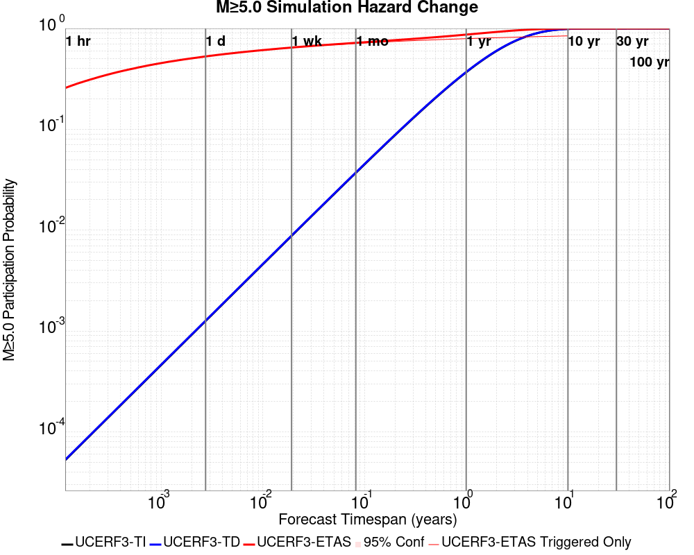
| Forecast Duration | UCERF3-ETAS [95% Conf] | UCERF3-ETAS Triggered Only | UCERF3-TD | UCERF3-ETAS/TD Gain | UCERF3-TI |
|---|---|---|---|---|---|
| 1 Hour | 0.257 [0.255 - 0.260] | 0.257 | 5.28E-5 | 4869.51 | 5.24E-5 |
| 1 Day | 0.528 [0.525 - 0.532] | 0.528 | 1.27E-3 | 416.98 | 1.26E-3 |
| 1 Week | 0.647 [0.644 - 0.650] | 0.644 | 8.84E-3 | 73.18 | 8.76E-3 |
| 1 Month | 0.721 [0.718 - 0.723] | 0.710 | 0.037 | 19.3 | 0.037 |
| 1 Year | 0.870 [0.868 - 0.871] | 0.793 | 0.371 | 2.35 | 0.368 |
| 10 Years | 0.998 [0.998 - 0.999] | 0.845 | 0.990 | 1.01 | 0.990 |
| 30 Years | 1.000 [1.000 - 1.000] * | * | 1.000 | 1 * | 1.000 |
| 100 Years | 1.000 [1.000 - 1.000] * | * | 1.000 | 1 * | 1.000 |
* forecast duration is longer than simulation length, only ETAS ruptures from the first 10 years are included

| Forecast Duration | UCERF3-ETAS [95% Conf] | UCERF3-ETAS Triggered Only | UCERF3-TD | UCERF3-ETAS/TD Gain | UCERF3-TI |
|---|---|---|---|---|---|
| 1 Hour | 0.030 [0.029 - 0.031] | 0.030 | 6.54E-6 | 4610.37 | 6.09E-6 |
| 1 Day | 0.076 [0.074 - 0.078] | 0.076 | 1.57E-4 | 483.46 | 1.46E-4 |
| 1 Week | 0.106 [0.105 - 0.108] | 0.106 | 1.10E-3 | 96.99 | 1.02E-3 |
| 1 Month | 0.132 [0.130 - 0.135] | 0.128 | 4.70E-3 | 28.21 | 4.37E-3 |
| 1 Year | 0.213 [0.211 - 0.215] | 0.166 | 0.056 | 3.82 | 0.052 |
| 10 Years | 0.549 [0.548 - 0.551] | 0.200 | 0.437 | 1.26 | 0.413 |
| 30 Years | 0.858 [0.857 - 0.858] * | * | 0.822 | 1.04 * | 0.798 |
| 100 Years | 0.998 [0.998 - 0.998] * | * | 0.997 | 1 * | 0.995 |
* forecast duration is longer than simulation length, only ETAS ruptures from the first 10 years are included

| Forecast Duration | UCERF3-ETAS [95% Conf] | UCERF3-ETAS Triggered Only | UCERF3-TD | UCERF3-ETAS/TD Gain | UCERF3-TI |
|---|---|---|---|---|---|
| 1 Hour | 2.79E-3 [2.48E-3 - 3.14E-3] | 2.79E-3 | 6.47E-7 | 4316.08 | 5.83E-7 |
| 1 Day | 8.05E-3 [7.51E-3 - 8.62E-3] | 8.03E-3 | 1.55E-5 | 518.47 | 1.40E-5 |
| 1 Week | 0.012 [0.011 - 0.012] | 0.011 | 1.09E-4 | 106.31 | 9.79E-5 |
| 1 Month | 0.015 [0.015 - 0.016] | 0.015 | 4.65E-4 | 32.74 | 4.20E-4 |
| 1 Year | 0.026 [0.025 - 0.027] | 0.021 | 5.65E-3 | 4.65 | 5.10E-3 |
| 10 Years | 0.080 [0.079 - 0.081] | 0.027 | 0.055 | 1.45 | 0.050 |
| 30 Years | 0.181 [0.180 - 0.182] * | * | 0.159 | 1.14 * | 0.142 |
| 100 Years | 0.466 [0.466 - 0.467] * | * | 0.452 | 1.03 * | 0.400 |
* forecast duration is longer than simulation length, only ETAS ruptures from the first 10 years are included

| Forecast Duration | UCERF3-ETAS [95% Conf] | UCERF3-ETAS Triggered Only | UCERF3-TD | UCERF3-ETAS/TD Gain | UCERF3-TI |
|---|---|---|---|---|---|
| 1 Hour | 1.40E-4 [7.97E-5 - 2.41E-4] | 1.40E-4 | 1.24E-8 | 11322.91 | 1.06E-8 |
| 1 Day | 5.00E-4 [3.75E-4 - 6.65E-4] | 5.00E-4 | 2.97E-7 | 1685.81 | 2.54E-7 |
| 1 Week | 7.42E-4 [5.87E-4 - 9.36E-4] | 7.40E-4 | 2.08E-6 | 357.22 | 1.78E-6 |
| 1 Month | 1.04E-3 [8.54E-4 - 1.26E-3] | 1.03E-3 | 8.90E-6 | 116.69 | 7.63E-6 |
| 1 Year | 1.74E-3 [1.50E-3 - 2.01E-3] | 1.63E-3 | 1.08E-4 | 16.04 | 9.29E-5 |
| 10 Years | 3.12E-3 [2.86E-3 - 3.43E-3] | 2.03E-3 | 1.10E-3 | 2.85 | 9.29E-4 |
| 30 Years | 5.53E-3 [5.26E-3 - 5.83E-3] * | * | 3.50E-3 | 1.58 * | 2.78E-3 |
| 100 Years | 0.016 [0.015 - 0.016] * | * | 0.014 | 1.15 * | 9.25E-3 |
* forecast duration is longer than simulation length, only ETAS ruptures from the first 10 years are included

| Section Name | Strike, Dip, Rake | # Hypos In Poly | Max Mag w/ Hypo In Poly | # Surfs In Poly | Max Mag w/ Surf In Poly | Min Dist To Any (km) | Min Poly Dist To Any (km) | Min Dist To Largest (km) | Min Poly Dist To Largest (km) |
|---|---|---|---|---|---|---|---|---|---|
| Airport Lake | 358, 50, -90 | 0 | 0 | 12.124 | 2.716 | 12.221 | 2.716 | ||
| Little Lake | 327, 90, 180 | 0 | 0 | 16.936 | 4.928 | 16.936 | 4.928 | ||
| Tank Canyon | 189, 50, -90 | 0 | 0 | 17.039 | 16.895 | 17.039 | 16.895 |
These are map plots of individual catalogs from the simulations, selected as the closest catalog to each of the given percentiles in terms of total number of events.
| Duration | p0.0 %-ile | p25.0 %-ile | p50.0 %-ile | p75.0 %-ile | p90.0 %-ile | p95.0 %-ile | p97.5 %-ile | p98.0 %-ile | p99.0 %-ile | p99.5 %-ile | p99.9 %-ile | p100.0 %-ile |
|---|---|---|---|---|---|---|---|---|---|---|---|---|
| 1 Week | 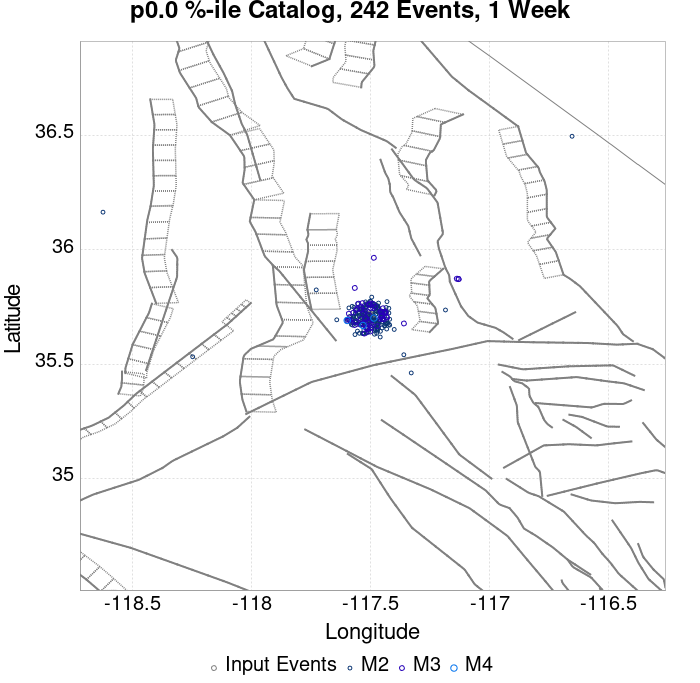 |  |  |  |  |  |  |  |  | 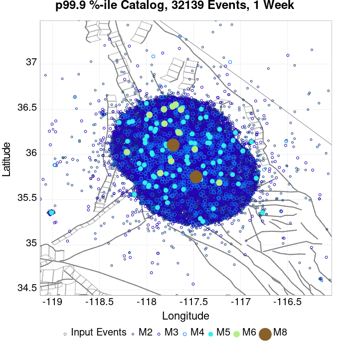 |  | |
| 1 Month |  | 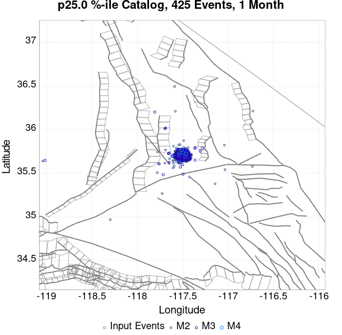 |  |  | 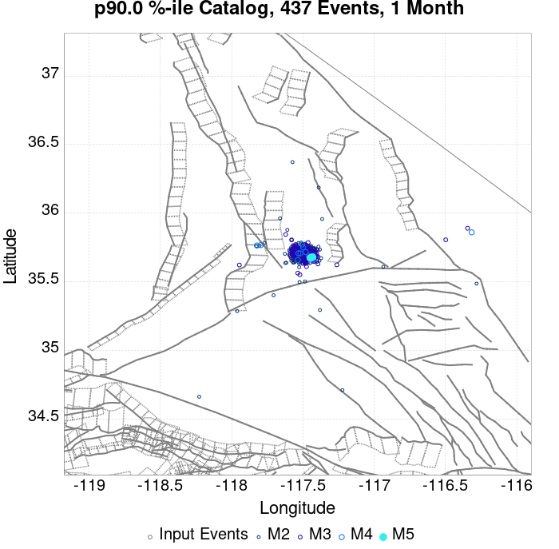 |  |  |  |  |  |  |  |
| 1 Year |  |  |  |  |  |  |  | 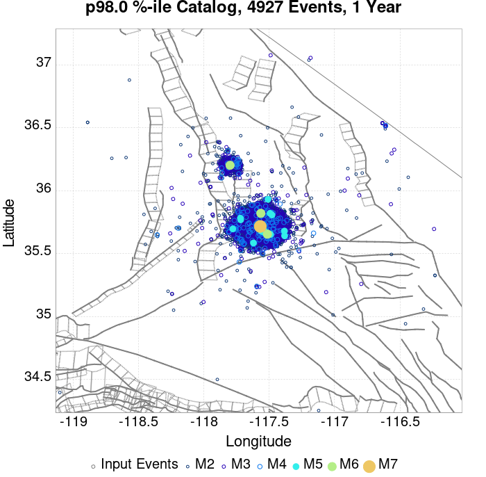 |  | 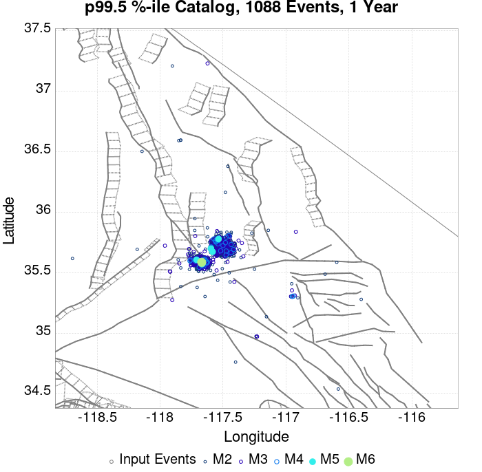 |  | 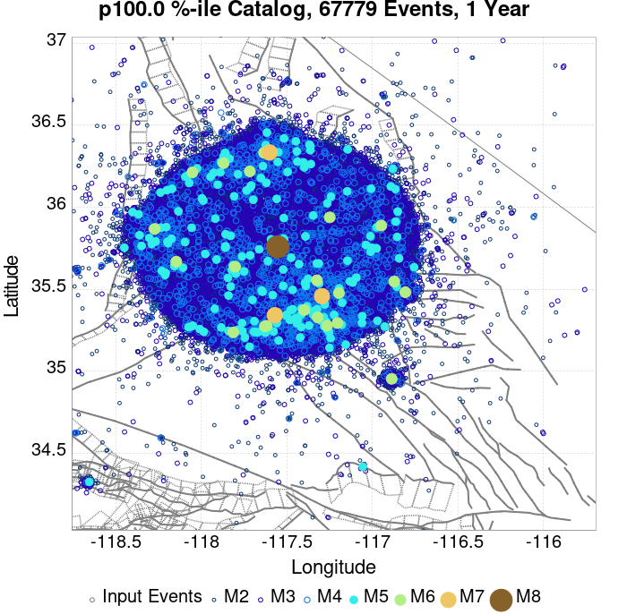 |
| 10 Year |  |  |  |  |  |  |  |  | 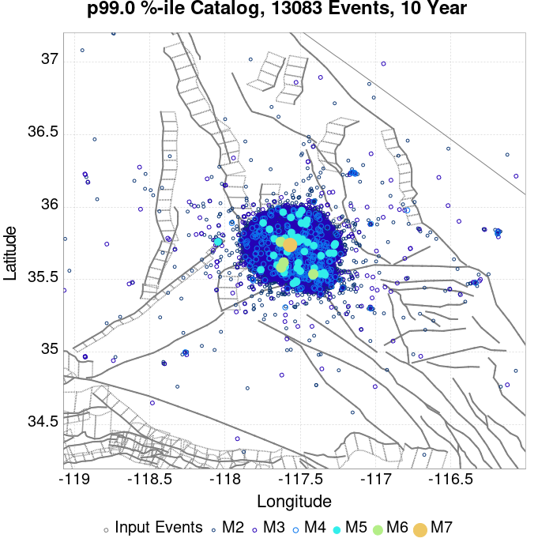 |  |  |  |
These plots compare simulated sequences with data from ComCat. All plots only consider events with hypocenters inside the ComCat region defined in the JSON input file.
Last updated at 2019/11/14 03:33:33 UTC, 132.4 days after the simulation start time.
Total matching ComCat events found: 1077
| Incremental MND | Cumulative MND |
|---|---|
 |  |
The following plots compare simulation results with ComCat data above a magnitude threshold. Plots labeled as M≥Mc(t) use the time-dependent magnitude of completeness (Mc) defined in Helmstetter et al. (2006), which is plotted below. In the case of multiple M≥5 ruptures, either as input to the simulation or in the comparison data, the maximum calculated time-dependent Mc is used. This time-dependent Mc function is plotted below.
| M≥Mc(t) | M≥3.5 | M≥4 | M≥5 | M≥6 | M≥7 | M≥8 |
|---|---|---|---|---|---|---|
| 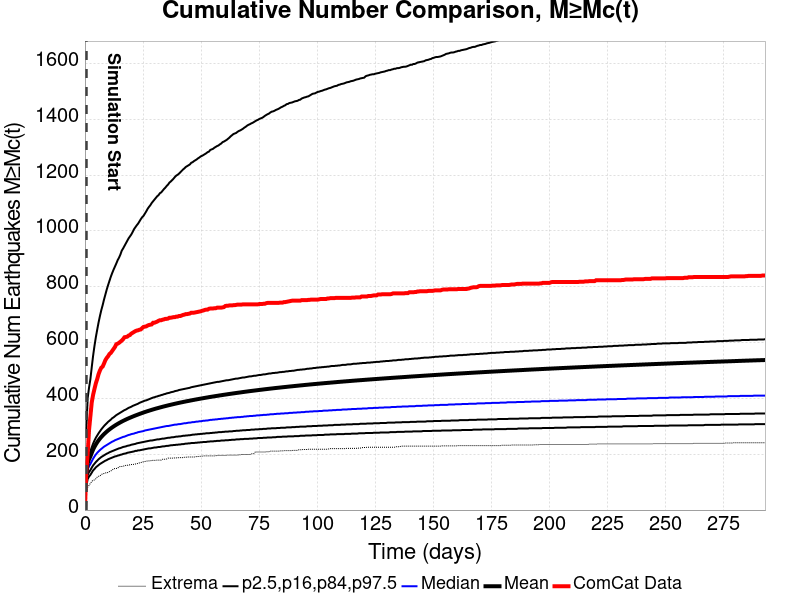 |  | 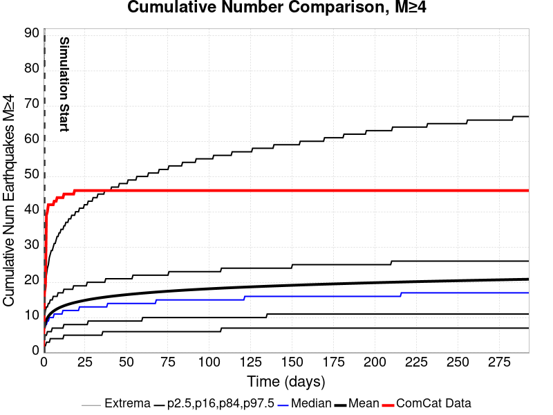 |  |  | 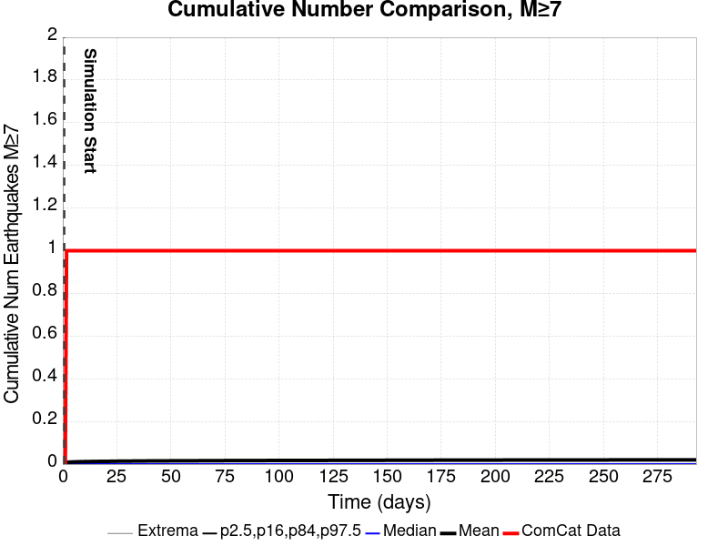 |  |

Note: maps labeled 'Forecast' are for a duration that extends into the future, only forecasted values are plotted (ComCat data omitted)
| 1 Day | 1 Week | 1 Month | Current (132.4 Day) | Forecast: 1 Year | |
|---|---|---|---|---|---|
| M≥Mc(t) | 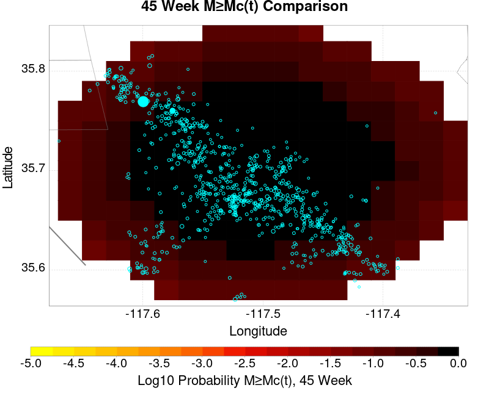 | ||||
| Prob: 100.00%, Actual: 179 | Prob: 100.00%, Actual: 503 | Prob: 100.00%, Actual: 660 | Prob: 100.00%, Actual: 765 | Prob: 100.00% | |
| M≥3.5 |  |  |  |  | |
| Prob: 100.00%, Actual: 55 | Prob: 100.00%, Actual: 144 | Prob: 100.00%, Actual: 161 | Prob: 100.00%, Actual: 166 | Prob: 100.00% | |
| M≥4 |  |  |  |  | |
| Prob: 99.88%, Actual: 19 | Prob: 99.99%, Actual: 42 | Prob: 100.00%, Actual: 45 | Prob: 100.00%, Actual: 45 | Prob: 100.00% | |
| M≥5 |  | 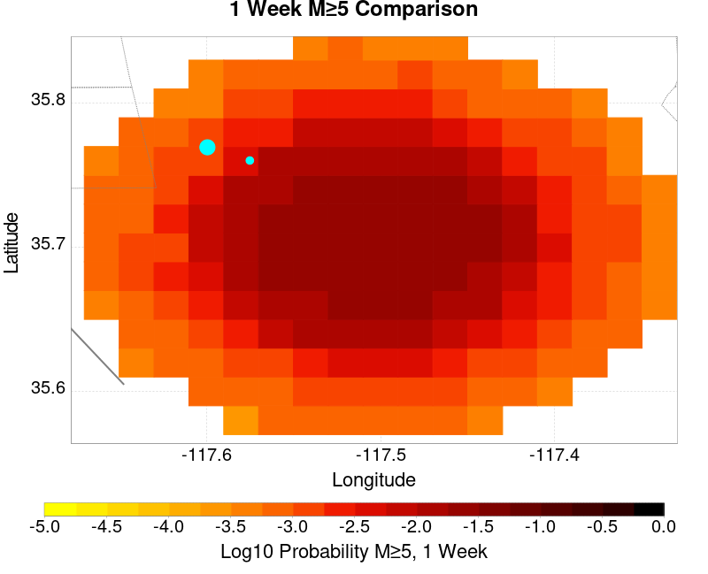 |  |  | |
| Prob: 50.84%, Actual: 1 | Prob: 62.19%, Actual: 2 | Prob: 68.77%, Actual: 2 | Prob: 74.17%, Actual: 2 | Prob: 77.16% | |
| M≥6 |  |  | 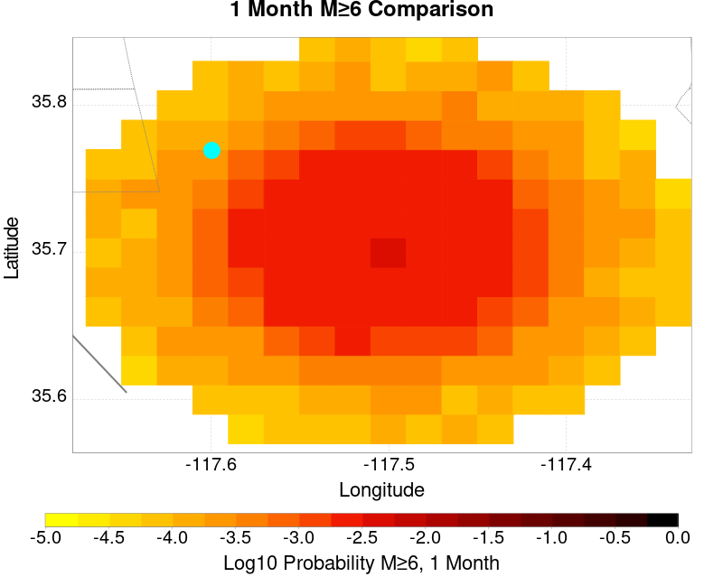 |  | |
| Prob: 7.19%, Actual: 0 | Prob: 9.97%, Actual: 1 | Prob: 12.07%, Actual: 1 | Prob: 14.13%, Actual: 1 | Prob: 15.56% | |
| M≥7 |  |  |  |  | |
| Prob: 0.75%, Actual: 0 | Prob: 1.05%, Actual: 1 | Prob: 1.35%, Actual: 1 | Prob: 1.65%, Actual: 1 | Prob: 1.88% | |
| M≥8 | 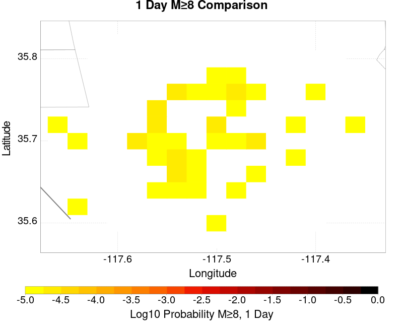 |  |  | 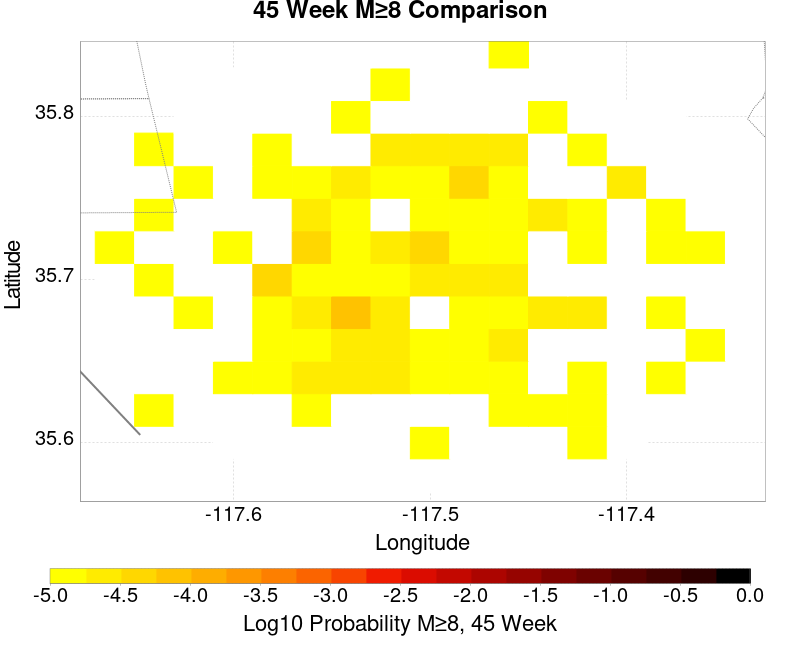 | |
| Prob: 0.05%, Actual: 0 | Prob: 0.07%, Actual: 0 | Prob: 0.09%, Actual: 0 | Prob: 0.11%, Actual: 0 | Prob: 0.13% |
Note: maps labeled 'Forecast' are for a duration that extends into the future, only forecasted values are plotted (ComCat data omitted)
| 1 Day | 1 Week | 1 Month | Current (132.4 Day) | Forecast: 1 Year | |
|---|---|---|---|---|---|
| M≥Mc(t) | 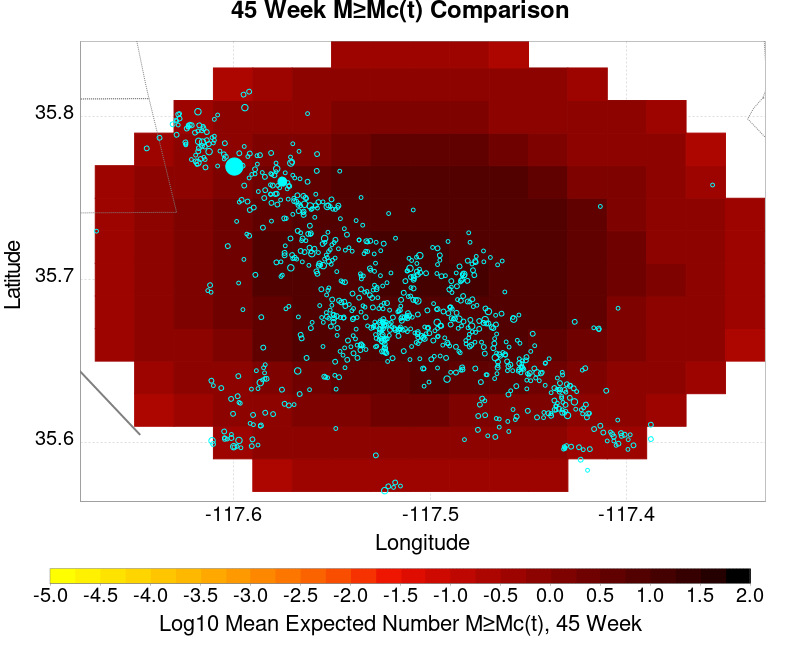 | ||||
| Mean: 158.300, Actual: 179 | Mean: 260.437, Actual: 503 | Mean: 360.719, Actual: 660 | Mean: 471.550, Actual: 765 | Mean: 552.324 | |
| M≥3.5 |  |  |  |  | |
| Mean: 26.053, Actual: 55 | Mean: 38.245, Actual: 144 | Mean: 48.290, Actual: 161 | Mean: 59.370, Actual: 166 | Mean: 67.446 | |
| M≥4 | 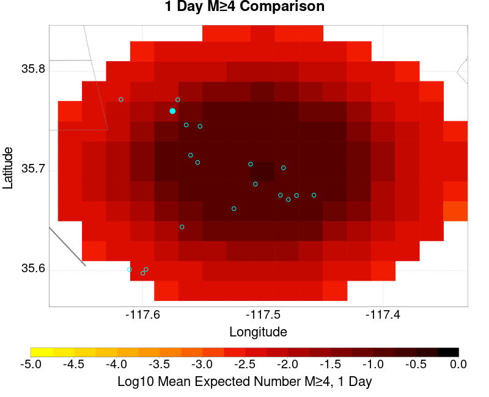 |  |  |  | |
| Mean: 8.235, Actual: 19 | Mean: 12.080, Actual: 42 | Mean: 15.252, Actual: 45 | Mean: 18.761, Actual: 45 | Mean: 21.313 | |
| M≥5 |  |  | 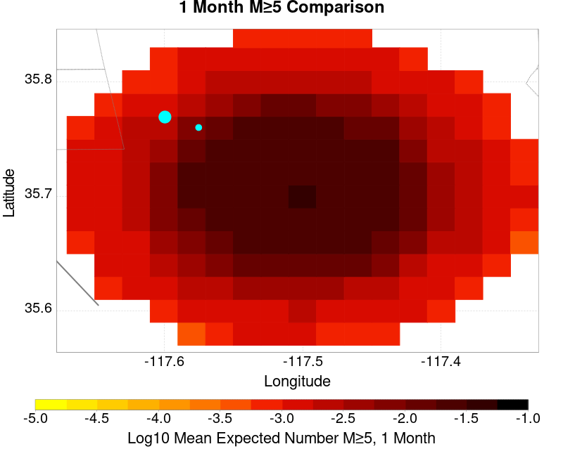 |  | |
| Mean: 0.824, Actual: 1 | Mean: 1.209, Actual: 2 | Mean: 1.526, Actual: 2 | Mean: 1.875, Actual: 2 | Mean: 2.130 | |
| M≥6 |  |  | 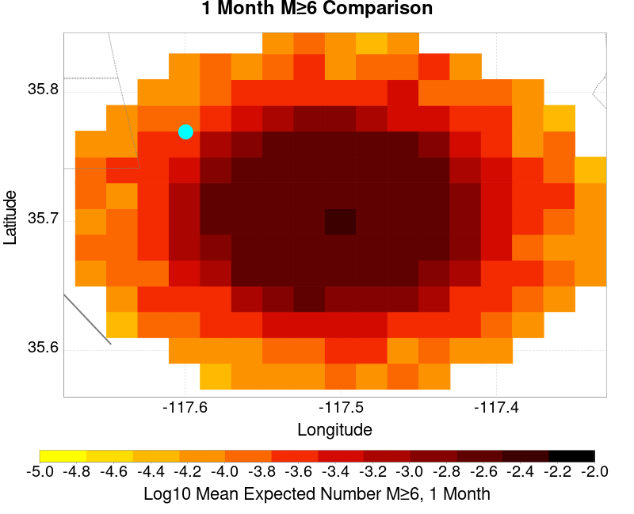 |  | |
| Mean: 0.082, Actual: 0 | Mean: 0.120, Actual: 1 | Mean: 0.152, Actual: 1 | Mean: 0.187, Actual: 1 | Mean: 0.213 | |
| M≥7 | 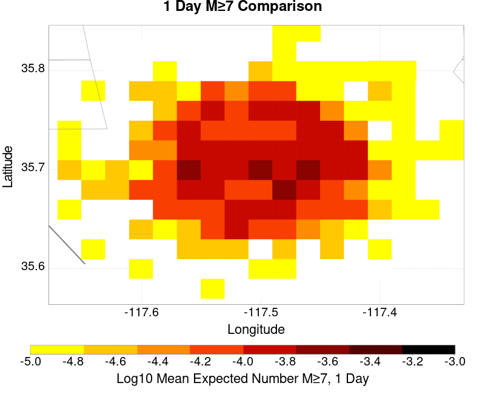 |  |  |  | |
| Mean: 7.67E-3, Actual: 0 | Mean: 0.011, Actual: 1 | Mean: 0.014, Actual: 1 | Mean: 0.018, Actual: 1 | Mean: 0.020 | |
| M≥8 |  |  |  |  | |
| Mean: 4.50E-4, Actual: 0 | Mean: 6.60E-4, Actual: 0 | Mean: 8.90E-4, Actual: 0 | Mean: 1.13E-3, Actual: 0 | Mean: 1.33E-3 |
| M≥Mc(t) | M≥3.5 | M≥4 | M≥5 | M≥6 | M≥7 | M≥8 |
|---|---|---|---|---|---|---|
| 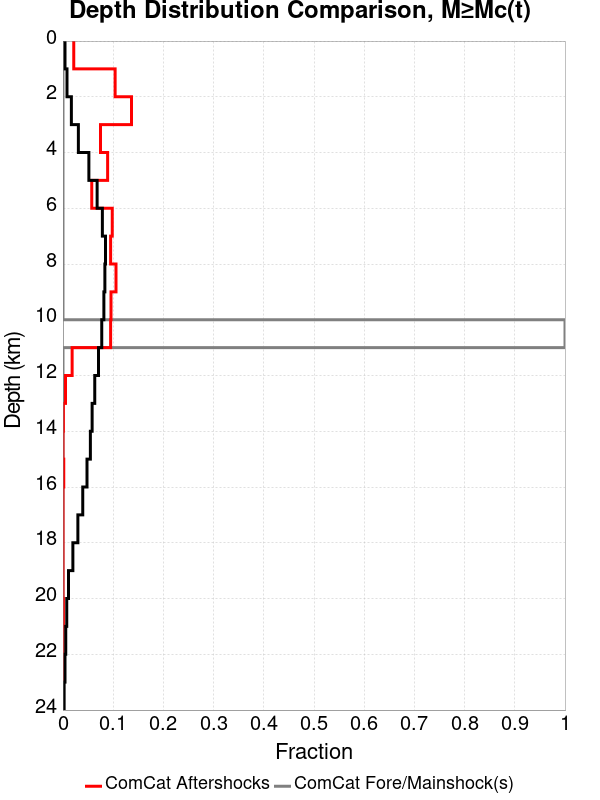 |  |  | 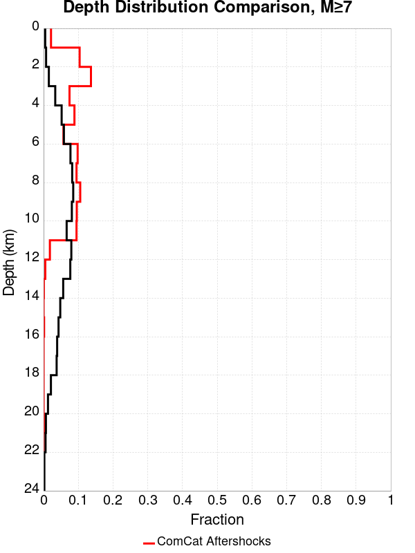 |  |
| Min Mag | Triggered Ruptures (no spontaneous) | Triggered Ruptures (primary aftershocks only) |
|---|---|---|
| M≥2.5 |  | 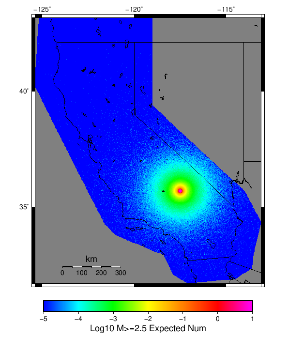 |
| M≥5 | 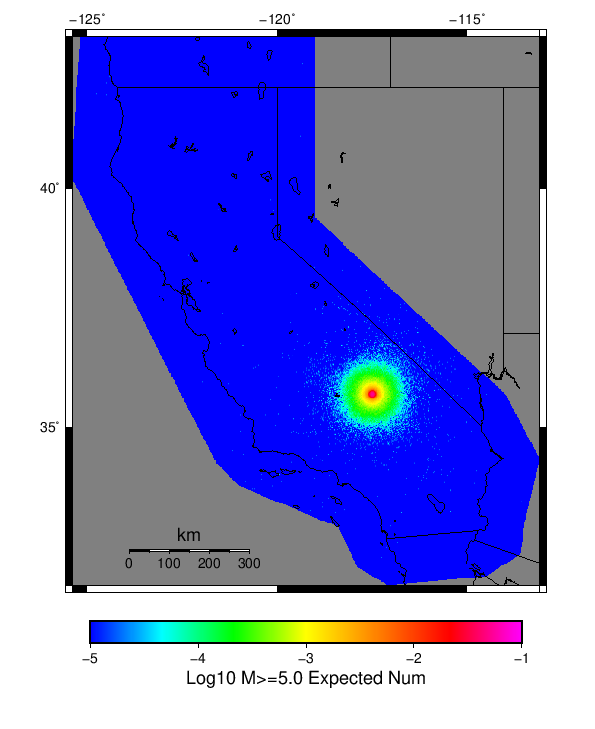 |  |
| M≥6 | 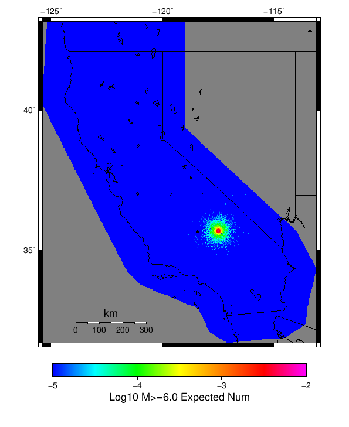 |  |
| M≥7 |  |
{
"numSimulations": 100000,
"duration": 10.0,
"startTimeMillis": 1562261630000,
"includeSpontaneous": false,
"randomSeed": 1569347001490,
"binaryOutput": true,
"binaryOutputFilters": [
{
"prefix": "results_complete",
"descendantsOnly": false
},
{
"prefix": "results_m5_preserve_chain",
"minMag": 5.0,
"preserveChainBelowMag": true,
"descendantsOnly": false
}
],
"forceRecalc": false,
"simulationName": "ComCat M6.4 (ci38443183), Point Sources, No Faults",
"numRetries": 3,
"outputDir": "${ETAS_SIM_DIR}/2019_09_24-ComCatM6p4_ci38443183_PointSources_NoFaults",
"triggerRuptures": [
{
"occurrenceTimeMillis": 1562259775340,
"comcatEventID": "ci38443095",
"mag": 3.98,
"latitude": 35.708,
"longitude": -117.5036667,
"depth": 10.58
},
{
"occurrenceTimeMillis": 1562261629000,
"comcatEventID": "ci38443183",
"mag": 6.4,
"latitude": 35.7053333,
"longitude": -117.5038333,
"depth": 10.5
}
],
"cacheDir": "${ETAS_LAUNCHER}/inputs/cache_fm3p1_ba",
"fssFile": "${ETAS_LAUNCHER}/inputs/2013_05_10-ucerf3p3-production-10runs_COMPOUND_SOL_FM3_1_SpatSeisU3_MEAN_BRANCH_AVG_SOL.zip",
"probModel": "POISSON",
"applySubSeisForSupraNucl": true,
"totRateScaleFactor": 1.0,
"gridSeisCorr": true,
"timeIndependentERF": false,
"griddedOnly": true,
"imposeGR": false,
"includeIndirectTriggering": true,
"gridSeisDiscr": 0.1,
"catalogCompletenessModel": "RELAXED",
"configCommand": "u3etas_comcat_event_config_builder.sh --event-id ci38443183 --num-simulations 100000 --days-before 7 --gridded-only --mag-complete 3.5 --hpc-site USC_HPC --nodes 36 --hours 24 --queue scec",
"configTime": 1569347001490,
"comcatMetadata": {
"region": {
"centerLatitude": 35.7053333,
"centerLongitude": -117.5038333,
"radius": 15.703628043335499
},
"eventID": "ci38443183",
"minDepth": -10.0,
"maxDepth": 24.0,
"minMag": 2.5,
"startTime": 1561656829000,
"endTime": 1562261629001,
"magComplete": 3.5
}
}